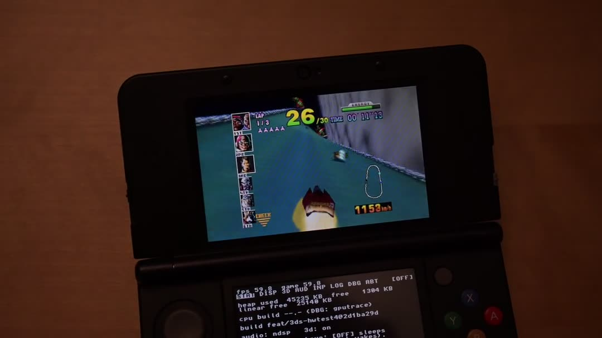
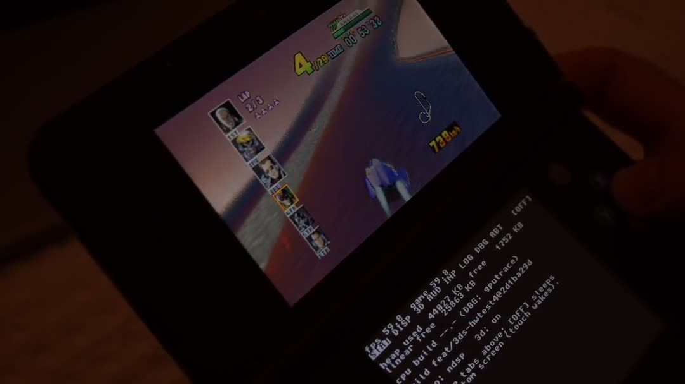
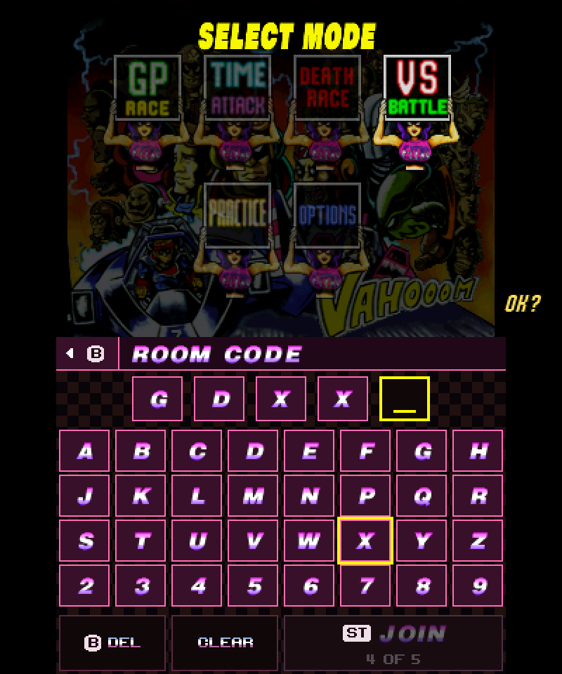
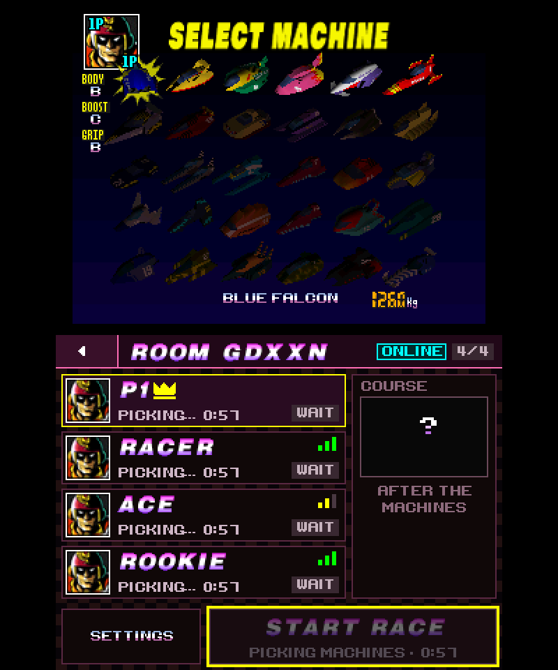

Post-mortem · New 3DS 2026-08-11 → 09-03 · Native fork 2026-09-07 → 10-19 (v1.0.0) · After v1.0.0 10-20 → 10-26 (v1.1.0)
G-Diffuser on 3DS
F-Zero X, ported from the libultraship PC runtime to the New Nintendo 3DS, reaching 59–60 fps with stereoscopic 3D, by one person directing a fleet of Claude agents over 24 days — then forked to a native renderer that also reached 59–60 fps on an Old 3DS development build, brought the 64DD Expansion Kit to the New 3DS, and added a bottom-screen dashboard, shipping as v1.0.0 (stereoscopic 3D ships as not yet a locked 60 fps on either console — see RELEASE-NOTES.md), then, a week later, v1.1.0: multiplayer, one-submission stereo and Old 3DS memory fixes.
- Overview — What was built, in one screen
- Author's notes — The one page written by a human
- Every step — The chronology, New 3DS to v1.1.0
- Road to 60 — The New 3DS performance campaign, round by round
- Road to 60, again — The Old 3DS needed a new renderer: how it works, and what shipped
- Pushing the boundaries — How it compares to the field
- Difficulties — The fights worth retelling
- Frontier — What this port does that others in its position haven't
- Agentic workflow — How the fleet was run, and how the ship was steered
- Cost — Tokens, dollars, subagents
01 · Overview
F-Zero X on 3DS — Old and New, native, with the 64DD Expansion Kit
How G-Diffuser, the PC port of the F-Zero X decompilation, got onto the Nintendo 3DS: one person directing, Claude agents writing all of the code, 11 weeks from first research to multiplayer.
- v0.9.0 2026-09-04 New 3DS and New 2DS XL only: a 59.6 fps hardware median and stereoscopic 3D, after a 24-day sprint.
- v1.0.0 2026-10-19 Old 3DS and 2DS support, a native renderer as the default on both consoles, the 64DD Expansion Kit on New 3DS, and the DASH bottom screen.
- v1.1.0 2026-10-26 Multiplayer for 2–4 players over local wireless, Wi-Fi or the internet; native menus; both 3D eyes in one GPU submission. Release notes in
docs/RELEASE-NOTES.md.
The numbers
Hardware: card-6 test logs, build ba0692e, 10-26 (1P vs CPU field, 3D on); how the numbers got there is on Road to 60. Tokens and cost: session transcripts to 10-26, method on Cost.
On hardware


The clips and photos below are from v0.9 (2026-09), before DASH replaced the debug console on the bottom screen.

open clip
open clip


What was built
Three console builds from one source tree:
- Old 3DS / 2DSF-Zero X
- New 3DS / New 2DS XLF-Zero X
- New 3DS + Expansion KitF-Zero X with the 64DD add-on
Each installs from the HOME menu (.cia) or the Homebrew Launcher (.3dsx). No ROM or disk image ships: players extract their own.
The whole game
- Grand Prix, Time Attack, Practice, Death Race, VS and the machine screens.
- With the Expansion Kit: Course Edit and Create Machine.
Speed
- New 3DS: 60 fps races in 2D and 3D.
- Old 3DS: 2D races at or near 60; 3D races mostly hold 60.
- The heaviest Old 3DS courses can still drop to 30 in 3D.
The console, used properly
- Stereoscopic 3D on the slider.
- Music and effects on the DSP.
- A bottom-screen dashboard (DASH).
- Clean HOME, sleep and power-off.
Multiplayer (v1.1.0 work)
- 2–4 players, each on their own console.
- Nearby or online.
Both consoles draw through the same native renderer by default. The New 3DS's first-phase render-thread path is still built in as an option; Frontier and Road to 60 cover it.
The stack
- decomp: the F-Zero X decompilation, unmodified upstream, with a small set of patches on top.
- libultraship: the N64 runtime that PC ports of decompiled games are built on. The port carries a trimmed copy with its 3DS changes folded in. It loads the game's assets; its original renderer remains as a fallback.
- port/3ds: the port itself, 181k lines: rendering, stereo, audio, input, menus, lifecycle, multiplayer and packaging.
- the native renderer: N64 PC ports normally translate the game's drawing commands into GPU calls one at a time, every frame. This port instead writes the 3DS GPU's own commands directly, from data prepared ahead of time, for races, menus and most transitions: nearly everything on screen. Only a few rare screens, such as the course editor and the ending, still take the old route. No other port in this family does this, and it is what lets the Old 3DS keep up. See The road to 60, all over again.
How it went
The first phase (08-11 → 09-03) ported the game to the New 3DS. The second (09-07 → 10-19, not originally planned) brought it to the Old 3DS through a native renderer and shipped v1.0.0. Then a week of v1.1.0 work.
| Dates | Stage | What happened |
|---|---|---|
| 08-11 → 08-14v0.9 | From research to a race | Feasibility dossier, a plan for a team of agents, five parallel foundation streams, six boot bugs; first race at 12–20 fps in the emulator. |
| 08-20 → 08-22v0.9 | Playable, then on a console | Fog, HUD, livery, shadow and sky fixed; menus from 27 to 60 fps; first hardware run 08-21 ("wow it runs amazing"), audio the same evening. |
| 08-27 → 08-28v0.9 | Product grade | Stereo 3D armed, touch menu, rival detail; a GPU vertex-transform moonshot built and shelved; README and release package. |
| 09-01 → 09-02v0.9 | Lifecycle and the last big lever | HOME crash and close-from-HOME hang fixed; per-frame display-list re-scanning replaced by memoized results; the LOCKED-60 campaign launched. |
| 09-02 → 09-03v0.9 | Multi-core | Render thread on core 2, one frame ahead; median 59.6 fps with 53% of frames at the cap. v0.9.0. |
| 09-07 → 09-29v1.0 | Make it fit | Old 3DS restarted; build squeezed into its 64 MB app region. First boot on a real Old 3DS: about 10 fps. |
| 09-29 → 09-30v1.0 | Find the real costs | Narrower audio lock (−20 ms a frame); frame skipping ends the slow motion; a retained renderer wins in the emulator only. |
| 09-30 → 10-01v1.0 | The probe | Hardware counters: the limit is instruction-cache misses, not instruction count. A working pose-replay fallback is shelved: "we should go for a real 60!" |
| 10-01 → 10-02v1.0 | Native renderer | Small race loops sized to the 16 KB instruction cache. 2D Grand Prix at a 16.5 ms median frame. |
| 10-03 → 10-08v1.0 | 3D at 60 | Per-eye resubmit: 59–60 fps in 3D on most courses; the heaviest can fall to 30. |
| 10-08 → 10-19v1.0 | Release | Expansion Kit verified tick-for-tick, released for New 3DS only (too slow on Old); DASH ships; adversarial review; v1.0.0. |
| 10-20 → 10-26v1.1 | After v1.0.0 | 2–4 player multiplayer; one GPU submission for both eyes (Old 3DS 3D menu 40.2 → 44.6 fps); HOME-close lock fixed. |
See Agentic workflow for how the second phase was run and The road to 60, all over again for the Old 3DS campaign, card by card.
Read on
- Author's notes: The one page written by a human.
- Every step: The chronology, New 3DS to v1.1.0.
- Road to 60: The New 3DS performance campaign, round by round.
- Road to 60, again: The Old 3DS needed a new renderer: how it works, and what shipped.
- Pushing the boundaries: How it compares to the field.
- Difficulties: The fights worth retelling.
- Frontier: What this port does that others in its position haven't.
- Agentic workflow: How the fleet was run, and how the ship was steered.
- Cost: Tokens, dollars, subagents.
docs/research/, the hardware logs, or the session transcripts the Cost page counts. Where a value is an estimate (the dollar figures, which apply published API list prices to exact token counts), the assumption is stated next to it.02 · Author's notes
A note from the human
Everything else on this site was written by the agent that did the work. This page was not.
03 · Every step
Step by step: twenty-four days, then forty-three more, then one week
Five chapters, one per tab: the New 3DS port (five bursts between three credit pauses), the native fork, the Old 3DS, shipping v1.0.0, and the week after it. Dates are local, from git and the session transcripts; quotes are the user's own words at the time.
Every entry was re-checked against what came after it. Where later evidence revised a number, a root cause or a decision, the entry carries a numbered Later note; Held marks a claim that was checked and stands.
Burst 1 · Research to first race (08-11 → 08-14)
- 08-11 03:16Deep research: is a 3DS port feasible?24 Verdict: New 3DS only; the Old 3DS 64 MB region cannot hold it.Later (09-25 → 10-19): it fit under simulation on 09-25, booted on an Old 3DS on 09-29, and shipped for the Old 3DS in v1.0.0. — this page, chapter 3; RELEASE-NOTES.md v1.0.0
- 08-11 03:44Plan for a team of agents "can we segment plan so we can have multiple work trees and multiple contributing agents ?" A memory budget, a five-stream plan and a reviewer agent.
- 08-11 → 08-12Phase 0 and the carve spike libultraship compiles on devkitARM with a 13-line newlib patch; Phase 1 streams merged 08-12 21:45.
- 08-13"start the crew", then black screens Full game linked 01:33; then bzero, 64DD, path mangling, double swap, the SETTIMG guard, a DMA misroute. 13:17: "i saw some random shapes briefly".
- 08-14 01:01First race "omg it works ! i can race ! it looks messed up and runs at 12 to 20fps but it works!" (after a race-time bad_alloc fix).
- 08-14 04:26Hardware prep, CI, docs CIA packaging, a hardware runbook, local CI; research on 60 fps and on stereo 3D.
- 08-14 14:06Pause 1 "we ran out of fable credits until next week". Fog (pink road) still open.
Burst 2 · Playable, then hardware (08-20 → 08-22)
- 08-20 02:55Resume; the road appears Fog solved (per-vertex blend, not the depth LUT); fog, GPU profiling, stereo, perf and culling merged.
- 08-20 05:38"run as many subagents on plausible tasks"23 A fleet on HUD, shadow, sky, tunnel, km/h, pop-in. The measurement pass: CPU-bound, not GPU-bound.Held (09-01 → 10-24): an emulator measurement at the time (GPU 0.4 ms vs CPU 26–58 ms); hardware agreed (GPU 5.6 vs build 16.3 ms), and the Old 3DS probe agreed on 10-24. — locked60-campaign.md; NATIVE-RENDERER.md ceiling_probe
- 08-20 22:45The HUD bug After eight wrong fixes: the bridge's ILP32 high-bits backstop dropped 13 SETTIMG a frame. "omg finally!!"
- 08-21 13:03"menus … still crazy slow at around 10fps" A per-opcode profiler named G_LOADBLOCK at 22.34 ms a frame; fixed within the hour. "blazing fast on the UI".
- 08-21 15:54First hardware run "wow it runs amazing ! … sound doesn't work btw". Audio fixed by 21:22 after eleven SD trips (the ROM-side driver needed host porting).
- 08-21 22:49"framerate at a crispy 60. then... maybe 3D?" Race-start hitch and decal fixes. Hardware median 48–50 fps, p95 58.
- 08-22 01:31Pause 2 "ran out of tokens again". Checkpoint 854b9d6.
Burst 3 · Product grade (08-27 → 08-28)
- 08-27 06:21Fleet drop Traffic grind (bridge 19.7 → 10.4 ms), sky wedge, CCMUX 11, off-axis stereo, shadow audit.
- 08-27 16:00Hardware with stereo22 "3D works great, doesnt seem to affect performance much"; first hard crash: the filelog grew without bound, fixed with a retained ring.Later (09-02 → 10-02): the 256 KB cap truncated a session (raised to 1 MB, 09-02); the ring then caused 26–270 ms and 1.1–2.8 s SD-write hitches (09-30), fixed by an async, dropping writer. — 2344e88; difficulties.html
- 08-27 16:53Touch menu and full bleed "the bottom screen should have a menu for these features"; full-bleed made default. 19:30: "i did the first GP!"
- 08-28 00:18Rival detail, packed VBO, HOME exit21 "minimal appears to be a 8 to 9 fps gain !"Later (10-19): the New 3DS preset runs full rival detail; automatic scaling is used on the Old 3DS. — gdx3ds_preset_n60.c; RELEASE-NOTES.md v1.0.0
- 08-28 04:27"moonshot! lets go for it"20 GPU vertex transform in one session: works, imperceptible on hardware, breaks the venue floor. Shelved.Later (09-29): the broken floor was traced to float24 cancellation on world-space vertices (up to ±32,000); a machines-only transform was rebuilt for the Old 3DS and ships in both presets. — o3dsgpuxf-progress.md; gdx3ds_preset_n60.c
- 08-28 13:17README and pause 3 README-3DS and the release package. Then the third pause.
Burst 4 · The last big lever (09-01 → 09-02)
- 09-01 21:27"the goal to 60fps"19 Bridge output cache NO-GO (87% of commands are host-built each frame); brfast memos instead, bridge 11.5 → 4.9 ms. Research: nobody has shipped beyond the per-frame walk.Later (10-02): the native race renderer (10-01/02) skips building the game's display-list sections on rendered ticks and draws from GPU-resident meshes. — native.html
- 09-01 23:53"the home button crashes the game!" Suspend-path audit and audio park gate; the first combined A/B test card.
- 09-02 14:02Hardware round 2 HOME works; close-from-HOME hang fixed. brfast: median 57.2 vs 56.0, p10 47.2 vs 42.0.
- 09-02 14:41LOCKED-60 campaign HUD atlas, TMEM bookkeeping, per-triangle cost, boot audio: four agents, landed by 13:40.
- 09-02 18:35"VERY slow. massive step back" A combined-lever HUD break; fixed, and "screenshot the combined levers before staging" became a rule.
- 09-02 21:56Rounds 3 and 4 Median 56, p10 48, 32% at the cap with stereo on; trace-on A/B steady 16.4 → 14.9 ms.
- 09-02 21:59Research 218 Core 2 usable, core 3 not, no precedent for cross-core render pipelining. Agents on a dispatch census, boot audio, a render thread.Later (10-19): the render thread shipped in v0.9.0 and was left out of the v1.0.0 presets (above). — gdx3ds_preset_n60.c
Burst 5 · Multi-core (09-02 night → 09-03)
- 09-02 → 09-03Render thread, sync → pipe → ahead Forked at osSpTaskStartGo; ahead mode acks DP-done when the game parks. Pipe mode on hardware: median 49 → 56.
- 09-03 13:20Round 5: median 59.6, p10 51.4, 53% at the cap17 Ahead mode, bridge on main, auto rival detail. Then a hard crash (texture-cache LRU on core 2), fixed by render-thread ownership.Later (10-19 → 10-26): v1.0.0's tuned presets set
renderthread = 0: the native race path fits 16.7 ms on one core. Card 6: New 3DS 3D races at 60 in every window without it. — gdx3ds_preset_n60.c; o3ds-card6-analysis.md §4 - 09-03 13:46 → 16:32Menu scale and stereo markers Machine-select 1.6× too large (viewport fold); 1P/2P markers anchored at the ship's depth.
- 09-03 18:08This post-mortem "lets write up a whole post mortem on this project."
- 09-04State of play (v0.9.0)16 Ahead mode, bridge-on-main, auto rival detail and the crash fixes all merged. The GPU vertex transform stayed shelved; the tunnel-roof bug (#27) was still open at v1.0.0.Later (09-29 → 10-19): a machines-only
gpuxf = 1(the floor stays on the CPU) is on in both consoles' auto presets in v1.0.0 and v1.1.0. — gdx3ds_preset_n60.c; o3dsgpuxf-progress.md
A feasibility pass on 09-07 found the fix should start with the development loop, not the renderer: no network path to the console, no frame oracle, no desktop reference build. Over two weeks that loop was rebuilt (a network control and log link, input-recorder determinism, a Linux reference render container), and the first renderer tier landed: an owned F3DEX2 interpreter replacing libultraship's, a native race path (track, machines, sky, HUD, effects), and the first 64DD Expansion Kit pass. In full on The road to 60, all over again.
- 09-24The milestone reopens A stale note said the user owned no Old 3DS; they did. Under a simulated 64 MB grant: RDRAM arena halved to 8 MiB,
audio_tablestreamed. - 09-25It fits, in simulation15 Replay 49/49 under
memtype=0with 2.65 MiB to spare.Later (10-16 → 10-26): a 10-16 hardware capture peaked at heapUsed ≈ 24.2 MB; card 6 logged a race watchdog at heapFree=3264. — STATUS.md; o3ds-card6-analysis.md §5.1 - 09-28The console says
memtype=0Matches the simulation byte for byte; the shipped RDRAM-16 build dies in its boot preload. - 09-29 00:10"it ran ! at like 9fps" Wall p50 96 ms, GPU busy 3.6 ms. "is there anything we can do to avoid the display lists"
- 09-29 dayThe parallel wave Audio-lock wait 25.8 → 0.2 ms, the HOME freeze (backlight session), bit-exact ARMv6 SIMD audio, the slow-motion discovery.
- 09-29 13:09"we want this running at 60fps" A design sub-orchestrator and five research and probe subagents.
- 09-29 15:16"playable but nausea inducing"14 Frame skipping: logic 57–60 ticks/s, drawn 19–28 fps. Draw cost measured at 10.9 µs per draw.Held (10-26): DrawProbe measured 10.9 µs flat over 30–300 draws (2,926 cycles). A uniform-free draw is 8.0 µs; a trimmed citro3d reached ~6.8 µs in the emulator, unmeasured on hardware; race draws now bypass it. — cpu-profile-answer.md §A.2
- 09-29 19:39First release candidate does not boot13 Cold size-optimised code crashes, stock boots; code generation reverted. The latent bug was never found.Held (10-26): still unproven; code generation stays stock and hot-first ordering was never re-tested on hardware. — rel1crash-progress.md; agent-D-cpu-cuts.md
- 09-30 01:10Second candidate boots, hitching12 "like 15fps ... a lot of awkward hitching": synchronous SD log flushes, 26–270 ms on main.Later (10-02 → 10-19): a full ring later forced 1.1–2.8 s writes; fixed by an async writer, then a log that drops lines rather than block. v1.0.0's own figure still shows the gap (57.3 vs 51.9 fps). — difficulties.html; RELEASE-NOTES.md v1.0.0
- 09-30 02:09"start as many agents as necessary" Seven agents hit the session limit together and were resumed; then the disk filled.
- 09-30 → 10-01A hardware profiler11 CPI 4.34, 43.6% fetch stalls; a probe found the cliff from CPI 1.06 at 16 KB of hot code to 4.1 at 24 KB.Held (10-07 → 10-08): native-renderer builds cut instructions ~3.6× and I-misses ~4×, but CPI rose to 5.4–6.4 with I-fetch stalls at 28–32%: less code, not faster code. — cpu-profile-answer.md §A.3
- 10-01 08:57"we should go for a real 60!" Pose replay (40 images/s, artifacts) set aside against a research verdict of "marginal"; an I-cache-first native race renderer begins.
- 10-01 22:41First native-renderer build freezes A verify mode rolled back the live GPU command queue; hardware only.
- 10-02 09:28"time trial was silk 60fps" 199,472 draws verified, 0 bad; Grand Prix 45–50 with log hitches. Saves after the first never persisted (fixed).
- 10-02 23:19"omg it ran amazing!" Card 3: race median 16.5 ms, 0 hitches. "lets focus on 3D at 60fps".
- 10-033D, first pass10 Black sky on an interim build, then "60fps for 2d for both", 3D in the 40s and 50s. The right eye is interleaved per chunk.Later (10-26): each chunk's two eyes became one queue entry (CMDBUF_JUMP): Old 3DS race entries 9 → 7, 3D menus 40.2 → 44.6 fps; v1.1.0 default. — ba0692e; a2905ed
- 10-03 → 10-07Rate-limit pause One branch's uncommitted edits recovered on 10-07.
- 10-07 22:513D, second pass Mute City ~60 in 3D with end-mode pacing; heavier venues 16–18 ms.
- 10-08 02:08"all 3 crashed" Bottom-screen framebuffer in VRAM, which a CIA maps read-only for the CPU; the emulator does not enforce it.
- 10-08 02:56"did a long play on main, was good!"9 VRAM change reverted: 3D Grand Prix race windows at 59–60 fps; 0 bad draws.Later (10-24 → 10-26): a development card, not the shipped build. A 16-machine race later ran 53.7 fps; one submission brought the 1P race to 59.7–59.8. — cpu-profile-answer.md §A.4; o3ds-card6-analysis.md
- 10-08Card 4 closes the 3D push8 59–60 fps in 3D Grand Prix race windows on a development card; the rest of v1.0.0 followed. Commit- and document-sourced from here.Later (10-19 → 10-26): v1.0.0 shipped 3D as “not yet a locked 60 fps”; a heavier 16-machine 1P race measured 53.7 fps (10-24); card 6's baseline ran 56.4 / 59.3 and one submission 59.7–59.8 (10-26). — RELEASE-NOTES.md; cpu-profile-answer.md §A.4
- 10-07 → 10-08Expansion Kit: own title and save The last blocker to a second, side-by-side install.
- 10-08 → 10-15Rate-limit pause The longest gap of the project.
- 10-15 → 10-17The bottom screen becomes DASH7 Lap, position, energy, splits, composited into the framebuffer at well under a millisecond of CPU time.Later (10-23): on Old 3DS hardware the DASH cost 4.2–5.6 ms a frame and was put on a 1 ms budget. — d9deb37; e99777b
- 10-16The Old 3DS memory ceiling, in simulation6 One large mid-race asset load can exhaust the budget (the generic archive loader); a hardware capture peaked near 24.2 MB. Left as a known limit.Later (10-26): v1.1.0 moved ~320 KB off the main heap and reserved the track at boot; card 6 showed the failure mode is fragmentation. Tight memory stays a known issue. — d7010a8; a2905ed; RELEASE-NOTES.md v1.1.0
- 10-16An audio-crackle hypothesis, refuted5 Vblank vs audio rate measured and ruled out; a smaller resample fix ships.Held (10-20): v1.1.0 turns the clamp and declick fixes on for the New 3DS, not yet confirmed to cure its crackle; Old 3DS residual crackle still open. — RELEASE-NOTES.md v1.1.0 Audio; 9ead784
- 10-18A New 3DS froze at the title screen The attract demo's full-field race overflowed the GPU command buffer; see The road to 60, all over again.
- 10-18 → 10-19Custom HUD mode shelved The three fixed DASH layouts ship; an idle view outside races.
- 10-19Disk streaming and Japanese inputs by default The 64DD image streams from SD on every build; Japan-region inputs accepted.
- 10-19v1.0.0 Four build targets from one tree, three downloads (Old 3DS, New 3DS, New 3DS + Expansion Kit; the Old 3DS Kit build stays from-source), replacing the New-3DS-only v0.9.0.
- 10-20 → 10-25Multiplayer Local wireless, same-Wi-Fi and online rooms, lockstep races with each console showing its own racer, a relay server, version gating. Old 3DS: 2D 60 in a 16-racer online race; 3D locked to 30. See MULTIPLAYER.md.
- 10-24The Old 3DS 3D ceiling probe4 Waiting out the previous frame's GPU work first made the frame no cheaper (13.5 → 14.2 ms), so a deferred-wait redesign was dropped: 3D races here are CPU-bound.Later (10-26): card 6 found 3D menus waiting 7.66 ms a frame on the GPU queue (per-entry latency); one submission per stereo chunk took them from 40.2 to 44.6 fps. — o3ds-card6-analysis.md §3
- 10-26HOME close, fixed3 Card 5's Old 3DS hard lock was a 73 KB allocation in the 64DD save flush; the flush now allocates nothing.Later (10-26): while chasing this lock a 617 KB drop in free heap was reported as a regression. The two logs compared were a 2D multiplayer session and a 1P 3D session; the comparison was wrong, not the build. — o3ds-card6-analysis.md; 9d19a5c
- 10-26One submission for both eyes2 From a homebrew developer's public question. Card 6 A/B: Old 3DS 3D menu 40.2 → 44.6 fps, race GX entries 9 → 7, 1.5–1.8 ms of headroom; New 3DS neutral. v1.1.0 default.Held (10-26): the menu result (6 vs 9 blocks, ±0.2 fps) is solid; the race figure rests on two blocks per arm. The Old 3DS frame has 9 queue entries, not the 11 the pre-card notes assumed. — onesubmit-progress.md; o3ds-card6-analysis.md §0
- 10-26Track arena and a wider 3D sky1 The course track moves into one 777,360-byte arena reserved at boot, aimed at the fragmentation failure card 6 hit; sky, floor and clouds widened by the eye shift.Later (10-26): built for card 6's failure (a 96,768-byte allocation refused with 1.6 MB free: fragmentation, not exhaustion); tested in the emulator, not yet on hardware. — RELEASE-NOTES.md v1.1.0 known issues; o3ds-card6-analysis.md §5.1
- 10-26The bottom screen, last pass DASH layout, D-pad navigation in the multiplayer sheets, one SETTINGS button.
- 10-26v1.1.0, prepared for release This page's last entry.
04 · Road to 60
The road to sixty
F-Zero X runs its logic at 60 Hz and the port never lowered that. On 10-26 both consoles race at 60: the New 3DS with headroom to spare, the Old 3DS at the edge in 3D. Most of this page is how the New 3DS got there first, from 08-14 to 09-03, on a renderer that is no longer the default. Every number is labelled with its date and build.
Where we are now · 10-26, v1.1.0
| Console · mode | Now (date, build) | Then |
|---|---|---|
| New 3DS · 1P race, 3D | 60 fps in every ~1 s window; render task 2.5–3.8 ms, ~13 ms of headroom (card 6, 10-26, ba0692e; widescreen on) | median 59.6, p10 51.4, 53% of beats at 60 (round 5, 09-03) |
| New 3DS · 1P race, 2D | no separate native-renderer figure on file (v1.0.0 notes: not yet measured); 3D, the heavier mode, holds 60 | median 57.2 with stereo off (round 2, 09-02) |
| New 3DS · menus, 3D | medians 56–61 fps (card 6; few windows, noisy) | ~20 fps in the emulator (08-21) |
| Old 3DS · 1P race, 2D | 60 fps: median frame 16.5 ms, 0 hitches (card 3, 10-02); full-field GP 57.3 fps mean with diagnostic logging (card 2, 10-02) | unsupported until 09-28; ~10 fps on first boot (09-29) |
| Old 3DS · 1P race, 3D | 59.7–59.8 fps with one submission per stereo chunk, baseline 56.4 / 59.3 (card 6, 10-26; two blocks per arm); a heavier 16-machine race 53.7 fps (10-24) | 59–60 in race windows on courses 12–16 (card 4, 10-08) |
| Old 3DS · menus, 3D | 44.6 fps, from 40.2 (card 6, 10-26) | interpreter menus with frame skipping (v1.0.0) |
| Old 3DS · multiplayer | 2D: 60 fps race windows, 2 players + 14 CPU (10-25, 3c0c7b7). 3D: locked 30 by design (10-24) | multiplayer is new in v1.1.0 |
| New 3DS · multiplayer | no separate figure on file | — |
Since v1.0.0 (10-19) both consoles run the native renderer by default ([perf] preset = auto: n60 on New 3DS, o3ds-auto on Old 3DS), with the render thread off. Sources: hwlogs/n3ds-card6, o3ds-card6, o3ds-card3, o3ds-0c2; RELEASE-NOTES.md; MULTIPLAYER.md. The renderer and the Old 3DS road are on The road to 60, all over again.
What the Old 3DS work gave back to the New 3DS
- The default route. The native renderer, per-eye stereo replay and end-of-frame pacing are the New 3DS default since v1.0.0 (
n60, render thread off). The render-thread path below is still built in behind an explicit ini. - Two audio levers (
audio_ctx_narrow,audio_simd) are on in the New 3DS preset too, though it never lacked audio headroom. - Fixes for both models: a backlight/HOME freeze, a save that could be lost on power loss (an SD rename quirk), and a log that never blocks the frame.
Where we were. Everything below is the New 3DS campaign of 08-14 → 09-03 (v0.9.0), on the libultraship-derived interpreter with a render thread on core 2. Notes marked Later say what changed afterwards.
Where the frame went: the CPU-bound verdict
New 3DS · 08-20 measurement pass (emulator), confirmed on hardware 09-01
The measurement pass of 08-20 settled the strategy. GPU drawing time was flat at 0.4 ms per frame and the loop never once waited on the PICA; CPU build time was 26 to 58 ms. Fill rate, model decimation and texture compression were struck from the plan as irrelevant to frame time (the whole race used 8 KB of texture bytes and 957 vertices per frame). The bottleneck was the software display-list interpreter and the bridge that feeds it. Every lever from then on attacked CPU time, and every profile was reported as a set of named buckets:
| Bucket | What it is |
|---|---|
br | the bridge pre-pass: converting the game's raw display list into the runtime's command form, resolving addresses |
dsp | interpreter dispatch: walking the converted list and executing every command |
vtx | vertex transform: projecting N64 vertices to clip space on the CPU |
tri | per-triangle work: tile extents, shader lookup, clip parameters, packed VBO emission |
imp | texture import: looking up or uploading textures for a draw |
drw | issuing the draw to citro3d, including the stereo target switch |
The emulator era: 08-14 → 08-21
Before the console arrived every number was an Azahar proxy, known to be pessimistic on menus and unrepresentative in absolute terms. The shape of the work still held.
| Date | Lever | Measured (emulator) |
|---|---|---|
| 08-14 | First race | 12–20 fps race, 15–20 fps menus, debug logging on |
| 08-20 | Frame pacer double-throttle fix, HLE audio producer to core 2, malloc histogram | measurement pass: CPU 26–58 ms vs GPU 0.4 ms |
| 08-21 | Loadblock discovery. Per-opcode profiler named G_LOADBLOCK at 22.34 ms per frame: each 4 KB load did 512 shared_ptr copies (a thousand atomic RMWs), a 4 KB memcpy and a live getenv | F3 22.34 → 2.21 ms; dispatch 27.6 → 8.9 ms; menu wall 35–38 → 16.7–19.9 ms. User: "blazing fast" |
| 08-21 | Flat dispatch table replacing libultraship's layered handler tables | neutral on time, enabled per-opcode profiling |
| 08-21 night | S7 interpreter memo (raw dispatch, geo-diag gate, tri-state memo), async frame-mirror copy, vblank-stall skip, upload thrash 155 → 0.5 per frame, resolutions 93 → 0 | menu 15 → 19.9 fps; race build 26–58 → 24–46 ms; title wall 34 → 21–27 ms |
| 08-21 | Texrect state fast path (batch same-state runs) | E4 texrect bucket 6–9.7 ms attacked |
Hardware, before the campaign: 08-21 → 08-28
| Date | Build | Hardware result (user + log) |
|---|---|---|
| 08-21 | First .cia and .3dsx, rspolish | 35–55 fps; median 48–50, p95 58, max 59 over 8 races; crowd dips 25–35. "wow it runs amazing" |
| 08-27 | Fleet drop: traffic grind (bridge region cache, binary-search asset lookup, pipesync no-op), sky wedge, CCMUX 11, stereo armed, shadow | "performance is much better! 3D works great, doesnt seem to affect performance much at all"; one hard crash (filelog OOM, fixed same day) |
| 08-28 | Touch menu, full-bleed display, rival detail option, triloop packed VBO, leak fix (upstream LUS bug) | median 51, p95 60, max 60; MINIMAL rival detail = +8–9 fps in crowds, floor ~40 (was 25–35) |
| 08-28 | GPU vertex transform moonshot | imperceptible on hardware; venue floor loses texture mapping (24-bit uniform precision). Shelved. |
The LOCKED-60 campaign: 09-01 → 09-03
New 3DS hardware · v0.9.0-era libultraship interpreter build · rounds 1–5
Five hardware rounds in three days, each a staged branch with a test plan, each measured from the console's own once-per-second fps beats in the log. Stereo was accidentally off in rounds 1 and 2 and on from round 3, which makes the later gains larger than they look.
| Round | What it carried | Conditions | Beats | Median | p10 | At cap |
|---|---|---|---|---|---|---|
| Round 1 | Mainline before the campaign | stereo off · trace off | 754 beats · 63 min | 51.3 | 39.2 | 9% |
| Round 2 | Bridge memos (brfast) | stereo off · trace off | 78 beats · 6.5 min | 57.2 | 46.6 | 29% |
| Round 3 | HUD atlas · triangle memo · TMEM · audio | stereo on · trace off | 237 beats · 20 min | 56.0 | 48.0 | 32% |
| Round 4 | Render thread on core 2 (pipe) | stereo on · trace off | 58 beats · 5 min | 57.6 | 44.6 | 14% |
| Round 5 | Ahead mode · bridge on main · auto rival detail | stereo on · trace off · full GP | 229 beats · 19 min | 59.6 | 51.4 | 53% |
Where the milliseconds came from
New 3DS hardware · 09-02 → 09-03 · trace on
Hardware profiles with the trace on (which itself inflates the numbers by a few milliseconds) on the same course, crowd windows (30 machines in view) and steady windows. Buckets in milliseconds per frame.
| Profile | Window | br | dsp | vtx | tri | imp | drw | Total |
|---|---|---|---|---|---|---|---|---|
| Campaign levers off control, same course | crowd | 2.96 | 8.26 | 1.12 | 5.58 | 0.78 | 1.48 | 20.2 |
| Campaign levers off control, same course | steady | 2.2 | 7.63 | 0.66 | 3.98 | 0.76 | 1.18 | 16.4 |
| Campaign levers on atlas · tri memo · TMEM · brfast | crowd | 3.07 | 7.84 | 1.18 | 4.64 | 0.78 | 1.24 | 18.8 |
| Campaign levers on atlas · tri memo · TMEM · brfast | steady | 2.17 | 7.35 | 0.65 | 3.22 | 0.72 | 0.79 | 14.9 |
| Render thread (pipe) core 2 renders, main waits | crowd | 3.12 | 4.89 | 1.01 | 4.21 | 0.68 | 1.16 | 15.1 |
| Render thread (pipe) core 2 renders, main waits | steady | 2.72 | 3.87 | 0.7 | 3.12 | 0.66 | 0.95 | 12.0 |
Every lever, and its verdict
Verdicts as of 09-03 (v0.9.0); later changes noted in the rows
| Lever | Idea | Measured | Verdict |
|---|---|---|---|
| Loadblock span store | One record per 4 KB load instead of 512 shared_ptr copies; same-content skip; getenv latch | F3 22.3 → 2.2 ms, dispatch 27.6 → 8.9 ms (emu) | mainline |
| Flat dispatch + [prof]/[profop] | Plain table dispatch; per-bucket and per-opcode timers | neutral; enabled everything after | mainline |
| S7 interpreter memos | Raw-pointer dispatch, gated geo diagnostics, tri-state memo | build 34 → 23.5 ms (emu); one 2× regression bisected out (dlcache) | mainline |
| Async frame mirror, vblank-stall skip | Menus stop waiting on a copy and on a late vblank | menu 15 → 19.9 fps; wVbl 10–16 ms → 0 (emu) | mainline |
| Texrect fast path | Batch same-state rectangle runs | E4 bucket attacked; superseded by the HUD atlas | mainline |
| Traffic grind | Bridge region cache (no svcQueryMemory per probe), binary-search asset lookup, pipesync no-op | br 19.7 → 10.4 ms, wall 55.7 → 46.7 ms (emu) | mainline |
| Prim/env value-change flush | Correctness first: flush on colour change | fixes machine tint; small cost | mainline |
| Rival detail (NATIVE/REDUCED/MINIMAL) | Bias the game's own LOD tiers for non-player machines beyond the 5 nearest | +8–9 fps in crowds on hardwareLater (10-19): the New 3DS preset now runs full rival detail; automatic scaling is an Old 3DS lever. — RELEASE-NOTES.md v1.0.0 | mainline |
| Triloop packed VBO | Single-write PICA-layout emission from the interpreter | kills the double vertex copy | mainline |
| Leak fix (uninitialised ColorCombinerKey::shader_id) | Upstream LUS bug: combiner map missed per draw | heap flat; hidden per-draw flush tax gone | mainline |
| Double-height stereo target | One 400×480 target, per-eye viewport, fewer PICA flushes | user observed 2D ≈ 3D on hardware; citro3d source says flush cost is GPU-side and the GPU idlesLater (10-26): both eyes did end up in one GPU submission, by another route (a CMDBUF_JUMP per stereo chunk): 3D menus +11% on Old 3DS, neutral on New 3DS; v1.1.0 default. — o3ds-card6-analysis.md | shelved |
| GPU vertex transform (moonshot) | Unlit vertex transform on the PICA vertex shader | works (220 k draws, zero fallback, −62% vtx emu); imperceptible on HW; 24-bit uniform precision breaks ±32000-unit floorsLater (09-29 → 10-19): a machines-only gpuxf = 1 ships on by default on both consoles; the floor stays on the CPU. — o3dsgpuxf-progress.md; gdx3ds_preset_n60.c | shelved |
| Bridge output cache | Cache converted display lists across frames, epoch-validated | census: 87% of walked commands are host-built per frame; ceiling ~1.5 msHeld (10-02): the NO-GO stands; the native fork removed the bridge from the race path instead. — native.html | NO-GO |
| brfast (bridge memos) | Per-list facts memo, address-resolve memo, placeholder/raw-copy/range-class memos | br 11.5 → 4.9 ms (emu); HW br 6.43 → 3.73 in crowds; median 56.0 → 57.2, p10 42.0 → 47.2 | mainline |
| HUD texrect atlas (trectbatch) | Pack HUD rectangles into atlas pages; batches stay open across views | crowd draws 136 → 26 (E4 −2.6 ms emu) | mainline |
| trifast | Fast packed triangle loop; found the S7 memo had never actually hit (flag bug) | tri −15..−19% (emu); HW tri 5.58 → 4.64 ms crowd | mainline |
| tmemfast | TMEM load bookkeeping | F3 −22..−35% (emu) | mainline |
| audioprime / audioprime2 | Boot audio underrun: title font sample load blocked on a 10.7 MB inflate | store audio_table uncompressed in the o2r: preload 4.3 → 1.97 s | mainline |
| dspfast (batch-break fold) | Fold prim/env changes to avoid batch splits | census: texture switches split anyway; cannot pay | default off |
| Machine texture atlas (atlas3d) | Atlas machine-part textures to cut switches | only ~21 imports per frame split a batch; 0.1–0.5 ms best case; two thirds of machine textures wrap or mirror | default off |
| Render thread, core 2 (mode 1, pipe) | Interpreter and draws on core 2, forked at osSpTaskStartGo | HW: stable, HOME clean; median 49 → 56, p10 42 → 48 (trace on); not yet overlapping (waitMain 10–15 ms) | mainline |
| Render thread mode 2 (ahead) | DP-done acknowledged when the game parks; 2-deep backpressure; true one-frame pipeline | HW round 5: median 59.6, p10 51.4, 53% at capLater (10-19 → 10-26): off by default since v1.0.0 (renderthread = 0): the native race path fits on one core, and New 3DS 3D races held 60 in every window on card 6 without it. — gdx3ds_preset_n60.c; o3ds-card6-analysis.md §4 | mainline |
| Bridge on main (bridgemain) | Bridge pre-pass runs on core 0 while core 2 renders | render-thread br 4 → 0 ms; brMain 3.6 ms; balanced cores | mainline |
| Auto rival detail (dynlod) | Raise the LOD tier when render > 15 ms, lower when < 12 ms; user setting is the floor | shipped in round 5; thresholds untuned on HWLater (10-19): kept in the Old 3DS o3ds-auto preset; not used by the New 3DS preset. — RELEASE-NOTES.md v1.0.0 | mainline |
| Render-thread-owned texture cache | Fixes the round-5 data abort: clears become requests drained on the render thread | receipt texcacheMainMut=0; awaiting HWLater (10-19): the render thread is off in the v1.0.0 presets, so this fix is off the default path. — gdx3ds_preset_n60.c | mainline |
Where this road ended
The interpreter path topped out here: a median a hair under 60 on the New 3DS, with the crowd start still the floor. For the Old 3DS it was a dead end, about 10 fps on first boot, far short of 60. That is what led to the native fork: The road to 60, all over again.
05 · Road to 60, again
The road to 60, all over again
On the Old 3DS, the original interpreter could not keep up. So from 09-07 we replaced it, piece by piece, with code that writes PICA200 commands directly. This page covers that native renderer, the Old 3DS road to 60, and what shipped with it.
Part 1 · The renderer
The convention
Every N64 PC port in this family renders the same way.
Where we were — v0.9.0
v0.9.0 ran that convention unchanged. On a 3DS it is CPU-bound.
Where we ended up — v1.1.0
The game still decides what to draw; the native renderer replaces how it reaches the GPU, one category at a time.
Why fork the renderer
On 09-07 the 3DS build compiled 36 libultraship files, 15,043 lines, dominated by the Fast3D interpreter (10,466 lines), plus a 12,353-line bridge that only widens the game's 32-bit display-list words to 64 bits. Everything else (window, audio, input, config) was already the port's own code. A census found machines, track and effects each drawn differently, so the fork is a hybrid: our own interpreter for everything, plus race-only paths for what a race frame spends its time on. The long tail (editors, ending, one-off screens) stays interpreted.
| Tier | What it does | At release |
|---|---|---|
| 1 · Own the interpreter | A purpose-built F3DEX2 → citro3d walker reads the game's display list directly. No bridge. | Default on both consoles; [perf] preset = off restores the libultraship path. |
| 2 · Bypass it for races | Track, machines, sky, HUD, effects and shadows drawn from baked or recorded data: the native race renderer (NRR). | Default on both consoles; since v1.1.0 it also covers menus, course select and machine select. |
Every lever is an ini killswitch with a verify mode that draws both paths and compares the vertex bytes bit for bit. [perf] preset = auto resolves per console at startup (n60 on New 3DS, o3ds-auto on Old 3DS) and turns the whole set on; an explicit ini key always wins.
The renderer work waited two weeks for the dev loop: a network listener that accepts a build, writes it to SD and relaunches through the Homebrew Launcher, and a live log link over 3dslink's protocol. One Y-press per power-on; after that the console reloaded builds on its own.
Case by case
Each part of a frame at v1.1.0 defaults. The last column is Old 3DS CPU per rendered 2D race frame: the 10-01 interpreter build against native-renderer card 3 the next day.
| Category | Before (v0.9.0) | Shipped path (v1.1.0 defaults) | Old 3DS ms |
|---|---|---|---|
| Machines | All 30 racers rebuilt as display-list commands and transformed on the CPU every frame. | A machine's first ordinary draw is its recording: from the next frame it is a retained mesh drawn as one GPU-transformed draw per material run, fed by a snapshot of its matrix, LOD and colours. First sight, crashed machines and time-attack ghosts stay on the ordinary path. | 4.05 → 1.09 |
| Track | The course tessellator re-wrote every ring's vertices each frame; the interpreter transformed them again. | Every distinct ring is baked once per course load into a GPU buffer, inside one arena reserved at boot (no heap fragmentation across loads). The game's own chunk cull and walk still choose what is drawn; each frame only writes indices, from 18 index templates. The GPU adds an exact integer eye offset. | 4.13 → 1.35 |
| Sky and backdrop | Walked and transformed like everything else. | The backdrop's state blocks are learned once; each frame the CPU transforms a handful of snapshot vertices and draws one packed draw per state block. | 3.02 → 0.40 |
| HUD (top screen) | One draw per texture rectangle, colour changes splitting batches. | The game's HUD code still runs; its commands are compacted behind markers and replayed as memoised, compiled register programs. About 12 of 14 runs are byte-identical from frame to frame. | 5.14 → 3.17 |
| Effects, shadows, scenery | Sprite by sprite through the interpreter. | One shared engine: state learned once, then the per-tick snapshot drawn as sprite batches. Course decorations use the machines' record-at-first-sight pattern. | 3.37 → 1.72 |
| Fog | The PICA fog unit, plus a combiner stage for the game's shade-alpha fog. | The NRR switches the fog unit off and blends fog in a combiner stage with the colour written as a constant; a track run that needs fog it cannot express falls back. | |
| Menus | Every non-race screen walked by the interpreter. | Since v1.1.0, menus, course previews and machine select are captured once and replayed as compiled programs (ni_*). The spiral transitions and one outline pass still go through the walker. | |
| Bottom screen | A debug console. | DASH and the bottom-screen menus never touch the GPU: the CPU paints a 320×240 buffer and copies only the changed columns. | |
| Stereo 3D | Each draw issued twice, once per eye. | The frame body is emitted once; a per-draw uniform carries the eye shift. Since v1.1.0 both eyes go in one GPU submission: the GPU runs the body, jumps to a right-eye prologue, runs it again. Old 3DS 3D menu 40.2 → 44.6 fps. | |
| Still on an interpreter | Everything. | Our own F3DEX2 walker (Tier 1) handles the frame setup between markers, credits, editors, demos and transitions. libultraship's interpreter runs only under preset = off. | 0.82 → 0.86 |
Part 2 · The Old 3DS
The Old 3DS road
The 08-11 feasibility study said the port could not fit an Old 3DS (268 MHz, no L2 cache, 64 MB). It booted there on 09-29 at about 10 fps, raced at 60 in 2D on 10-02 and in 3D on 10-08. Every card was a physical SD-card trip.
| Old 3DS, 10-26 | Now | Measured on | Before |
|---|---|---|---|
| 1P race, 2D | 60 fps, median frame 16.5 ms, 0 hitches | card 3, 10-02 | ~10 fps, 09-29 |
| 1P race, 3D | 59.7–59.8 fps with one submission (suggestive) | v1.1 card 6, 10-26 | 56.4 / 59.3 baseline; 53.7 with 16 machines (10-24) |
| Menus, 3D | 44.6 fps | v1.1 card 6, 10-26 | 40.2 |
| Multiplayer | 2D 60 fps (2 players + 14 CPU); 3D locked 30 by design | v1.1 card 3, 10-25; 10-24 probe | new in v1.1.0 |
Every card, on the calendar
A card is one round trip: build, ini, test plan, play session, log back. Hover or tap a card for what it carried.
September 2026
Dies in the boot preload:
[fatal] operator new failed size=175844 heapFree=32424. Console answers memtype=0, heap grant 24 MiB (25,165,824 B)hw-first-boot-0928-DGDX_3DS_RDRAM_MB=8, audio_stream=1, tex_upload_kb=512; legacy interpreter (native all=0)Boots and races. Wall p50 96.0 ms (p10 88.7, p90 111.3); GPU busy 3.6 ms;
oth 37.3 ms. User: "it ran ! at like 9fps"hw-rdram8-0929run 1 · 1109-29 · C4 run 1: O3DS profile-DGDX_3DS_O3DS=ON (RDRAM 8 MiB + 16 MiB linear pin: 38.9 MB heap), owned interpreter all=1 interp=1GP wall 88 ms (11.3 fps), TT/menu 43.7 ms;
aud 25.8 ms = audio-lock wait, confirmed on hardwarehw-c4run1-0929run 2 · 1509-29 · C4 run 2: narrow audio lockaudio_ctx_narrow=1aud 25.8 → 0.2 ms; race wall 67.8 ms (14.7 fps), light scenes 40 mshw-c4run2-0929HOME / SIMD09-29 · Wave 2: HOME + audio SIMDHOME bisect builds; audio_simd verifyHOME freeze root cause isolated (bottom backlight session); 7/7 HOME resumes with screen on;
audio_simd verify 391/0/0, 0 mismatches on siliconhw-wave2-0929skip · 19–2809-29 · Wave 3: frameskip + O3DS presetframeskip=auto, preset=o3ds, gpuxf=1, DrawProbe calibration CIALogic 57–60 ticks/s (game at full speed for the first time); drawn 19–28 fps in races. User: "playable but nausea inducing". DrawProbe: 10.9 µs CPU per draw, 14 Mtri/shw-wave3-0929REL1 ✗ boot09-29 · REL1All C5 stage-1 levers + O3DS code generation (cold
-Os, hot-first order)Boot crash, deterministic. Four-title bisect: cold
-Os crashes, stock and -O2+order boothw-rel1-fail, hw-rel1b-fail, hw-rel1crash-bisectframeskip=steady, HUD/machine/track retained pathsBoots. Race ~15 fps rendered (steady stuck at D=4), rw50 26–35 ms, "lots of awkward hitching": synchronous SD log flushes of 26–270 ms on mainhw-rel2REL3 · 2009-30 · REL3Every exact lever on, async file log, overlap kick
"no hitches, steadier"; steady mostly D=3 (20 fps rendered), rw50 24–36 mshw-rel3-run1, hw-rel3-run2PMU · CPI 4.309-30 · HWPROF BPMU counters (
c5pmu) and the r60 probeRender CPI 4.34, 43.6% of cycles in instruction-fetch stalls; probe CPI 1.06 at 16 KB of hot code, 4.10 at 24 KB, 5.62 at 32 KBhw-hwprof-B
October 2026
20 rendered + 20 replayed images/s, 1.3 ms per replay, but sky jitter, black tearing edges, giant fx triangles. 26.8 ms CPU per rendered frame. User: "we should go for a real 60!"hw-rel4NRR ✗ freeze10-01 · n60-m1 (NRR milestone 1)Native race renderer: HUD, track, machines, sky;
nrr_direct=2 verify runHard freeze at race start. Cause: verify mode's state save/restore rolled back libctru's live GX queue (the emulator's GSP completes synchronously and cannot show it)hw-n60m1-V
RUN V: 199,472 draws verified, bad=0, float24 max 0.011 px. RUN C: TT "silk 60 fps"; GP W median 14.2 ms = 57.3 fps outside log-flush windows (51.9 fps all windows), harsh hitch every ~1/5 laphw-n60card2-V, hw-n60card2-Ccard 3 · 60 2D10-02 · n60-card3Never-blocking log,
frameskip=race0, save fix, swap gate, texture fixes, HUD memo, native tunnel joins and decorationsRace median 16.5 ms, 0 race hitches; save persisted across a power cycle. User: "omg it ran amazing!"hw-n60card3
[stereo] enabled=1 (NRR refused stereo, legacy path)Black sky: the NRR sky consumed the section but could not draw under stereohw-interim3d3D · 4010-03 · n60-3dStereo on the NRR: one frame body, resubmitted for the right eye with a per-eye uniform
No glitches; 3D race ~19.8 ms vs 16.5 ms 2D (frame-begin GPU wait 6.6 vs 3.3 ms) → 33 ms quantum, cost guard flapping, ~40 fpshw-n60-3d3D · 48–5710-03 · n60-3d2Right eye interleaved per submitted chunk
2D 60 in GP and TT. 3D "40s and 50s": every race tripped the guard in the intro; steady 3D GP ≈ 48–57 fpshw-n60-3d2
Mute City 3D ~60 in end mode (hold 1 on 250–255 of 256 frames); Silence and Sand Ocean heavier (work 16–18 ms)hw-n60-3d3
lcd_vram=1Crash at boot on all three variants, no log: LCD framebuffers in VRAM, which the CIA maps read-only for the CPUhw-n60-3d4card 4 · 3D 6010-08 · card 4 (VRAM fix)Same build, two levers off in the SD ini
3D GP courses 12–16: race windows hold 1 on 245–256 of 256 frames at work ≈15.5 ms → ≈59–60 fps. VERIFY variant bad=0. Heavy windows only on the post-race results tablehw-n60-3d4b1
Idling the GPU first did not make the frame cheaper (13.5 → 14.2 ms, 11.8 → 12.3 ms): Old 3DS 3D is CPU-bound; the deferred-wait plan was dropped. 1P 3D race with 16 machines: wall 18.6 ms = 53.7 fps. 3D multiplayer locked to 30 (ed04b17)hwlogs/o3ds-0c2; cpu-profile-answer.md; ed04b17a3b10-24 · o3ds-a3bOld 3DS hardware log set from the v1.1.0 tuning work; not analysed on this pagehwlogs/o3ds-a3b90810-24 · o3ds-908Old 3DS hardware log set from the v1.1.0 tuning work; not analysed on this pagehwlogs/o3ds-908b5210-24 · o3ds-b52Old 3DS hardware log set from the v1.1.0 tuning work; not analysed on this pagehwlogs/o3ds-b52
Race windows at a locked 60 (wall 16.71 ms, 3.8–4.1 ms of vblank slack); the steady governor still flapped 60/30 at D=1, fixed by the drift rule (a89289f)hwlogs/o3ds-card3; cpu-profile-answer.md §A.4online110-25 · o3ds-online1Old 3DS hardware log set from the v1.1.0 tuning work; not analysed on this pagehwlogs/o3ds-online1card210-25 · o3ds-card2Old 3DS hardware log set from the v1.1.0 tuning work; not analysed on this pagehwlogs/o3ds-card2card2b10-25 · o3ds-card2bOld 3DS hardware log set from the v1.1.0 tuning work; not analysed on this pagehwlogs/o3ds-card2bcard2c10-25 · o3ds-card2cOld 3DS hardware log set from the v1.1.0 tuning work; not analysed on this pagehwlogs/o3ds-card2c
HOME-close hard lock (a 73 KB allocation in the 64DD save flush)hwlogs/o3ds-card5card 6 · 3D 6010-26 · v1.1 card 6 (ba0692e)One GX submission for both eyes, four-arm automatic A/B; heap fixes
1P 3D race 59.7–59.8 fps with one submission (baseline 56.4 / 59.3; two blocks per arm, so suggestive); 3D menu 40.2 → 44.6 fps; HOME close cleanhwlogs/o3ds-card6; onesub-hw/o3ds-card6-analysis.md
- 09-28 Shipped build (RDRAM 16) — Dies in the boot preload:
[fatal] operator new failed size=175844 heapFree=32424. Console answersmemtype=0, heap grant 24 MiB (25,165,824 B) - 09-29 First boot (RDRAM 8) — Boots and races. Wall p50 96.0 ms (p10 88.7, p90 111.3); GPU busy 3.6 ms;
oth37.3 ms. User: "it ran ! at like 9fps" - 09-29 C4 run 1: O3DS profile — GP wall 88 ms (11.3 fps), TT/menu 43.7 ms;
aud25.8 ms = audio-lock wait, confirmed on hardware - 09-29 C4 run 2: narrow audio lock —
aud25.8 → 0.2 ms; race wall 67.8 ms (14.7 fps), light scenes 40 ms - 09-29 Wave 2: HOME + audio SIMD — HOME freeze root cause isolated (bottom backlight session); 7/7 HOME resumes with screen on;
audio_simdverify 391/0/0, 0 mismatches on silicon - 09-29 Wave 3: frameskip + O3DS preset — Logic 57–60 ticks/s (game at full speed for the first time); drawn 19–28 fps in races. User: "playable but nausea inducing". DrawProbe: 10.9 µs CPU per draw, 14 Mtri/s
- 09-29 REL1 — Boot crash, deterministic. Four-title bisect: cold
-Oscrashes, stock and-O2+order boot - 09-30 REL2 — Boots. Race ~15 fps rendered (steady stuck at D=4), rw50 26–35 ms, "lots of awkward hitching": synchronous SD log flushes of 26–270 ms on main
- 09-30 REL3 — "no hitches, steadier"; steady mostly D=3 (20 fps rendered), rw50 24–36 ms
- 09-30 HWPROF B — Render CPI 4.34, 43.6% of cycles in instruction-fetch stalls; probe CPI 1.06 at 16 KB of hot code, 4.10 at 24 KB, 5.62 at 32 KB
- 10-01 REL4 — 20 rendered + 20 replayed images/s, 1.3 ms per replay, but sky jitter, black tearing edges, giant fx triangles. 26.8 ms CPU per rendered frame. User: "we should go for a real 60!"
- 10-01 n60-m1 (NRR milestone 1) — Hard freeze at race start. Cause: verify mode's state save/restore rolled back libctru's live GX queue (the emulator's GSP completes synchronously and cannot show it)
- 10-02 n60-card2 — RUN V: 199,472 draws verified, bad=0, float24 max 0.011 px. RUN C: TT "silk 60 fps"; GP W median 14.2 ms = 57.3 fps outside log-flush windows (51.9 fps all windows), harsh hitch every ~1/5 lap
- 10-02 n60-card3 — Race median 16.5 ms, 0 race hitches; save persisted across a power cycle. User: "omg it ran amazing!"
- 10-03 interim legacy 3D — Black sky: the NRR sky consumed the section but could not draw under stereo
- 10-03 n60-3d — No glitches; 3D race ~19.8 ms vs 16.5 ms 2D (frame-begin GPU wait 6.6 vs 3.3 ms) → 33 ms quantum, cost guard flapping, ~40 fps
- 10-03 n60-3d2 — 2D 60 in GP and TT. 3D "40s and 50s": every race tripped the guard in the intro; steady 3D GP ≈ 48–57 fps
- 10-07 n60-3d3 — Mute City 3D ~60 in end mode (hold 1 on 250–255 of 256 frames); Silence and Sand Ocean heavier (work 16–18 ms)
- 10-08 n60-3d4 — Crash at boot on all three variants, no log: LCD framebuffers in VRAM, which the CIA maps read-only for the CPU
- 10-08 card 4 (VRAM fix) — 3D GP courses 12–16: race windows hold 1 on 245–256 of 256 frames at work ≈15.5 ms → ≈59–60 fps. VERIFY variant bad=0. Heavy windows only on the post-race results table
- 10-24 o3ds-3d ceiling probe (0c2668a) — Idling the GPU first did not make the frame cheaper (13.5 → 14.2 ms, 11.8 → 12.3 ms): Old 3DS 3D is CPU-bound; the deferred-wait plan was dropped. 1P 3D race with 16 machines: wall 18.6 ms = 53.7 fps. 3D multiplayer locked to 30 (ed04b17)
- 10-25 v1.1 card 3 (3c0c7b7) — Race windows at a locked 60 (wall 16.71 ms, 3.8–4.1 ms of vblank slack); the steady governor still flapped 60/30 at D=1, fixed by the drift rule (a89289f)
- 10-26 v1.1 card 5 (5e19320) — HOME-close hard lock (a 73 KB allocation in the 64DD save flush)
- 10-26 v1.1 card 6 (ba0692e) — 1P 3D race 59.7–59.8 fps with one submission (baseline 56.4 / 59.3; two blocks per arm, so suggestive); 3D menu 40.2 → 44.6 fps; HOME close clean
The machine
| Old 3DS | New 3DS | |
|---|---|---|
| CPU | 2 × ARM11, 268 MHz, no L2 | 4 × ARM11, up to 804 MHz, 2 MB L2 |
| L1 instruction cache | 16 KB; a miss costs ~37 cycles (measured) | misses can hit L2 |
| App memory | 64 MB region, 24 MiB heap grant | 124 MB |
| Usable cores | core 0; core 1 is a 30% share (audio) | core 0 + core 2 |
Five phases
1 · Make it fit (09-24 → 09-29). RDRAM arena halved to 8 MiB, audio_table streamed; replay 49/49 with 2.65 MiB spare under simulation, and the console matched it byte for byte. One flag, -DGDX_3DS_O3DS=ON, makes the Old 3DS build.
2 · Find the costs (09-29 → 09-30). First race: 96 ms a frame, GPU busy 3.6 ms. The audio lock wait went 25.8 → 0.2 ms, ARMv6 SIMD made synthesis 2.2× cheaper, and frame skipping fixed the slow motion ("playable but nausea inducing"). A retained renderer won in the emulator and did almost nothing on hardware.
3 · The probe that changed the plan (09-30 → 10-01). Performance counters: CPI 4.34, 43.6% of cycles stalled on instruction fetch. A probe loop ran at one instruction per cycle with 16 KB of hot code and four at 24 KB. Research called native 60 "marginal" and offered pose replay; the user: "we should go for a real 60!"
4 · The native race renderer (10-01 → 10-02). One small loop per race category, each sized to the 16 KB L1-I, writing command words from GPU-resident meshes. Game logic untouched and hash-checked every tick.
5 · 3D (10-03 → 10-08). The frame body is built once and resubmitted for the right eye with a per-eye uniform. The CPU fit, but frames missed vblank behind a 5–7 ms right-eye tail; interleaving per chunk and end-mode swaps gave Grand Prix windows at 59–60 on 10-08.
Later (10-24 → 10-26): a heavier 16-machine race measured 53.7 fps and idling the GPU first did not help, so 3D here is CPU-bound and multiplayer 3D is locked to 30. One submission (below) raised the 1P race to 59.7–59.8. — hwlogs/o3ds-0c2, o3ds-card6; ed04b17One submission for both eyes (v1.1.0)
After v1.0.0, a 3DS homebrew developer asked in a public comment whether the stereo path submits each eye separately, and suggested one command list for both. It did not re-encode the right eye, but every replayed list was its own GX queue entry, with its own GSP submit, completion interrupt and event-thread wake on core 0. Old 3DS probes put a clean citro3d draw at 10.9 µs and showed 0.4–0.5 ms of GPU dead time per backlogged queue entry (about 40 µs on New 3DS).
The fix uses the PICA200's second command-buffer channel: each stereo chunk ends by jumping to a short right-eye prologue, which jumps back into the same chunk, then to the finalize words. GSP gets one entry; the GPU runs the body twice and raises one interrupt. In the emulator every frame hash, game-state hash and screenshot matched the old path. On hardware, one build per console cycled four arms automatically:
[gxcost] receipts.| Old 3DS | 0 baseline | 1 one submit | 2 + no kick | 3 + narrow flush |
|---|---|---|---|---|
| 3D menu, static screen | 40.2 fps | 44.6 | 44.6 | 44.6 |
| 1P 3D race (2 blocks per arm) | 56.4 / 59.3 | 59.7–59.8 | 59.7–59.8 | 59.7–59.8 |
| Headroom on the critical path | – | ≈ 1.5 ms | ≈ 0 | ≈ 1.8 ms |
The menu is the clean result (6 against 9 blocks, ±0.2 fps); the race line is suggestive. Dropping the mid-frame kick saved CPU but lost CPU/GPU overlap, so it netted zero. The New 3DS was neutral. Arm 3 ships as the v1.1.0 default on both consoles ([stereo] onesubmit = 1, onesubmit_narrow = 1).
Memory
The Old 3DS margin was thin at v1.0.0 and stayed the main source of post-release bugs:
- HOME close hard-locked the console (card 5). The 64DD save flush at exit wanted one contiguous 73 KB buffer; about 390 KB was free, but not in one piece.
bad_allocled tosvcBreak, which locks instead of exiting. The flush now streams with no heap allocation, and a break during teardown exits. Card 6 logged a clean exit. - The fast track path dropped after six course loads. A 96,768-byte allocation failed with 1.6 MB free: fragmentation, not exhaustion. The track now lives in one 777,360-byte arena reserved at boot (emulator-verified over a 6-course Grand Prix).
- About 320 KB moved off the main heap, mostly the bottom screen's art buffers, which had been static arrays in the program image.
What the Old 3DS forced
- Leaving the display list in races. A faster interpreter on a second core was enough on the New 3DS; at a third of the clock with no L2 and no spare core, the interpreter's own code did not fit in cache.
- A hardware profiler. The emulator models neither the I-cache nor the console's memory permissions, so its wins stopped predicting hardware. ARM11 performance counters became the judge.
- A memory diet. A smaller RDRAM arena, streamed audio tables, capped uploads, a pinned heap layout, and a high-water mark instead of a free-list figure that had been misread as headroom.
- Frame pacing as design. With a millisecond or two of margin, when the swap is requested matters: a swap gate, an end-of-frame mode, and a race-scoped frame-skip guard.
Still open
- Heavier venues (Silence, Sand Ocean) can step 3D down to 30.
- The results table after a race is still heavy.
- Brief audio gaps during loads. The vblank-rate crackle theory was measured and refuted.
- Memory remains a listed known issue.
Part 3 · What shipped
The Expansion Kit
The 64DD Expansion Kit (course editor, machine creator, disk content) is its own build, "G-Diffuser EK", with its own HOME-menu title, save and log, so it installs beside the plain game. It needs the player's own retail Japanese 64DD disk image, streamed from SD rather than held in RAM (62 MB saved); without one, the EK entries simply don't open. A fan-translated English image froze at boot in testing and is a known issue.
Under the Old 3DS profile in the emulator it fits with ~6 MB spare and matches the plain game tick for tick (6,002/6,002 on a ROM course, 8,601/8,601 on a disk course). On Old 3DS hardware disk courses stuttered, disk music broke up and the editors crawled, so it ships for the New 3DS only.
The bottom screen: DASH
The second screen started as a debug console and became a race dashboard: lap, position, energy, splits and the map, painted by the CPU straight into the bottom framebuffer, no GPU. Three layouts (all top, split, all bottom) cycle from a touch chip or a SELECT long-press. On Old 3DS hardware it cost 4.2–5.6 ms a frame, so it was put on a 1 ms budget. In 2–4 player races the HUD stays on the top screen. A drag-and-resize layout editor was shelved; a one-frame speed spike (up to ~826 KPH) at the finish line is known and cosmetic.
The New 3DS freeze
A real New 3DS froze, with no dump and no log line, every time the attract demo reached its full 30-machine race; the emulator never reproduced it. Bisection on the console found the GPU command buffer sized at the edge of that frame: with one lever off, the same frame hit a bounds-checked panic in the buffer writer instead. The buffer went from 2× to 4× the citro3d default on both consoles, with a log line before any future overflow. Four hardware boots through that frame came back clean.
Multiplayer
Most of v1.1.0: 2–4 players over local wireless, the same Wi-Fi, or online with a room code, each console showing its own racer, CPU machines filling the field. Old and New 3DS can share a room. On the Old 3DS, multiplayer races run in 2D at 60 by default; 3D is locked to 30. Player guide: MULTIPLAYER.md.


Emulator captures (Azahar), not hardware: four New 3DS instances in an online room through a local rendezvous server.
Release: v1.0.0, then v1.1.0
v1.0.0 (10-19) is three downloads from one tree: Old 3DS, New 3DS, and New 3DS with the Expansion Kit. All share one SD folder and pick their preset at startup. v1.1.0 (10-26) keeps the same three downloads and adds multiplayer, native menus and one-submission 3D. See RELEASE-NOTES.md and STATUS.md.
| Known issue (v1.0.0, still open) | What it means |
|---|---|
| 3D is not a locked 60 on either console | Old 3DS 3D is CPU-bound: 59–60 on most courses, some step to 30; multiplayer 3D is 30 |
| The Old 3DS memory ceiling | A large mid-race asset load can exhaust the budget in a worst-case emulator run; hardware peaks near 24.2 MB |
| Brief audio gaps during loads | Short and occasional |
| A speed-readout spike at the finish | Cosmetic, DASH only |
| Not every mode tested on every model | Coverage favours the modes used most in development |
The day-by-day account is on Every step; the hardest fights on Difficulties.
06 · Pushing the boundaries
Pushing the boundaries
How this port compares with other N64 projects on the 3DS, from their own READMEs and press, each claim linked. Searched on 2026-10-08, still current at release. None of their figures were measured by us, and the games differ in load, so this is a comparison of claims, not a benchmark.
The field
| Project | Source | Approach | What it says about Old / New 3DS performance | Stereo 3D |
|---|---|---|---|---|
| G-Diffuser 3DS (this project) | The road to 60, all over again | F-Zero X decomp on libultraship; own F3DEX2 walker plus a native race renderer writing PICA200 command words | Old 3DS: 2D races at 60 (median frame 16.5 ms); 3D 59–60 on most courses, CPU-bound, some step to 30. New 3DS: 3D races at 60 in every window. Native 60 Hz logic, no interpolation (our hardware logs) | Yes |
| Super Mario 64 3DS port (mkst) | mkst/sm64-port, branch 3ds-port | Decomp PC port; renderer details not in the README | README: "Naïve frame-skip if frame takes longer than 33.3ms"; a 60 FPS enhancement patch is listed. Press (2020): "a solid 30fps", model not stated (VGC) | Yes (README) |
| Ocarina of Time 64 3DS port | Andresac90/OOT-64-3DS-Port | zeldaret/oot decomp; renderer started from the SM64 PC port's Fast3D renderer | README: New 3DS "60 in 2D and 3D" by interpolation (measured on hardware). Old 3DS: "about 15–17 in the biggest scene (Kokiri Forest), around 45 in interiors" (measured at simulated Old 3DS speed); "60 everywhere is still being worked on" | Yes |
| Majora's Mask 64 3DS port | Andresac90/MM-64-3DS-Port | decomp | "Nothing runs on the 3DS yet" | – |
| Smash 64 for New 3DS | 2gifts/smash64-3ds | decomp; credits the SM64 3DS graphics backend, citro3d; renders on the New 3DS's third core | "Original 3DS/2DS models are not supported"; "a locked 60 FPS is not guaranteed in every situation" | Yes |
| Mario Kart 64 3DS | EstebanPdN/mario-kart-64-3ds | SpaghettiKart (libultraship) based; Fast3D vertex/texture ranges, combiner plans compiled once per material | "retains its original 30 Hz game simulation"; an adaptive interpolated midpoint frame on Old and New 3DS, "not a promise of a fixed or sustained 60 FPS mode" | Not mentioned |
| Ship of Harkinian 3DS | 999sian/soh-3ds | libultraship (SoH); PICA200 renderer on citro3d, built for F3DEX2 | New 3DS is the main target; "Old 3DS uses native 20 FPS presentation"; "Physical Old 3DS gameplay is not yet verified" | Not mentioned |
| rt64-3ds | oneup03/rt64-3ds | Renderer for N64ModernRuntime static recompilations: F3DEX2 interpreter, CPU vertex transform and lighting, per-eye replay | "Under construction. First target is Donkey Kong 64 (New 3DS only)"; no frame rates | Yes |
| sm64coopdx New 3DS | PR #26 | citro3d | Not yet called playable; "30 FPS stability" listed as a next gate | – |
| DaedalusX64-3DS (emulator) | GameBrew, Wololo 2020 | HLE emulator, ARMv6 dynarec | "Tested on N3DS, runs about at 20-30FPS on average" (v1.0, 2022-10-16) | Not verified |
| Ocarina of Time 3D (Nintendo/Grezzo, 2011) | Nintendo Life | Remake, native 3DS engine | Miyamoto: "It ran at 20fps on the Nintendo64, but on the 3DS, it runs at 30fps" | Yes |
| Star Fox 64 3D (2011) | Nintendo Life review | Remake | Numeric frame rate: not found | Yes |
What we can and cannot say
- We found no other N64 decompilation, recompilation or emulator project on the 3DS that claims a sustained 60 fps on an Old 3DS. The nearest are the OoT port (15–45 fps by scene, measured at simulated Old 3DS speed), the MK64 port (adaptive interpolation over 30 Hz logic), SoH-3DS (20 fps presentation, unverified on hardware) and the SM64 port.
- Every renderer we found interprets N64 display lists (Fast3D / F3DEX2 translated to citro3d). We found none that, like this project's native renderer, skips display-list construction for whole categories of geometry and writes precomputed PICA200 command words instead.
- Our 60 was race-only at v1.0.0: menus ran on the interpreter with frame skipping. Since v1.1.0 the menus, transitions, course select and machine select draw natively too; the post-race results table is still heavy. Several of the projects above target the whole game and interpolate instead; that is a different trade, not a lesser one.
- No other native F-Zero X port on the 3DS was found. Wololo (2020), citing a Reddit compatibility list, names F-Zero X among the games with "playable performance" on the New 3DS under DaedalusX64.
- Not verified: Old 3DS frame rates for the SM64 port and DaedalusX64 (the sources are forum threads that returned HTTP 403), stereo support in DaedalusX64, and a numeric frame rate for Star Fox 64 3D.
- Also searched and not found: a Star Fox 64 (Starship), Perfect Dark, Banjo or 2Ship 3DS port; an upstream libultraship 3DS backend; a Mupen64Plus or ParaLLEl-N64 core for 3DS.
- Correction to this post-mortem's own Frontier page (written 09-03): it describes the SM64 3DS port as 30 Hz logic interpolated to 60. The README read for this page describes naive frame skipping below 30 fps and lists a separate 60 FPS patch; we could not confirm the interpolation description, and Frontier now links here.
07 · Difficulties
What fought back
A New 3DS is an 804 MHz ARM11 with 124 MB for the app, a GPU that speaks neither OpenGL nor anything a PC port has met, and a debugger that is a text file on an SD card. Every layer of the stack assumed a PC. These are the fights worth retelling: each one's root cause and what it took.
The shape of the problem
G-Diffuser is the F-Zero X decompilation running on libultraship, a runtime that replays the N64 display lists on a modern GPU through a software Fast3D interpreter. On a PC that interpreter is a rounding error. On the 3DS it was the entire frame budget: a 16.7 ms frame with a CPU that spent 35 to 58 ms just building the frame in the first emulator measurements. The GPU was idle the whole time. The port therefore turned into a CPU project disguised as a graphics project, which is the opposite of what a console port normally is.
| Constraint | Why it hurt |
|---|---|
| ILP32 pointers | Every "small address means N64 offset" heuristic in libultraship and the bridge misfired: the image sits at 0x100000 and the heap at 0x8000000, both inside the N64's 8 MB RDRAM range. |
| PICA200 fixed-function GPU | No fragment shaders. Every combiner mode had to fit three TexEnv stages, and fog goes through a depth LUT that F-Zero X's depth range defeats. |
| Debugging on hardware | Mostly a log file on the SD card and Luma exception dumps. The Old 3DS test unit has no GDB stub, so profiling there meant performance counters. |
| Azahar is not a 3DS | Slower than hardware on some screens, faster on others, no instruction cache, no memory permissions, stale screenshots. Hardware was the only truth, and hardware needed the user's hands. |
The boot fights (2026-08-12 → 08-14)
Getting from a linked binary to a race took three days and six distinct root causes, each of which presented as the same symptom: a black screen.
The non-Expansion-Kit path computed a negative buffer size and cleared memory until it hit an unmapped page. First black-screen hang.
A NULL dereference in disk-drive detection code that the PC build never reached.
The archive loader normalised sdmc:/… into a nonsense path, so the asset index came back empty and every texture was missing. Fixed by treating device prefixes as roots.
libultraship and citro3d both presented; frames alternated between real and stale.
libultraship drops texture pointers below a threshold on the assumption that small numbers are N64 offsets. On the 3DS the heap starts at 0x8000000, under that threshold, so every texture was dropped. This is the bug class that recurred for two weeks.
Program globals were being redirected to the RDRAM shadow, freezing the race the moment it loaded.
"omg it works ! i can race ! it looks messed up and runs at 12 to 20fps but it works!"
The visual fights (08-14 → 08-27)
Pink road: fog through the wrong door
citro3d routes fog through the PICA fog unit, a 128-entry lookup table indexed by fragment depth. F-Zero X compresses the whole track into a clip-depth band about 0.01 wide (0.98 to 0.995), which lands on two LUT entries, so every road fragment got full fog. A first "batch split" fix was proven irrelevant by a probe line that produced an identical frame. The real fix bypasses the LUT: the interpreter's per-vertex fog factor is written into the primary-colour alpha and blended in one TexEnv stage. Solved 08-20 by an Opus session while the weekly usage allowance for the project's regular model (the "Fable" tier) was out.
Scrambled HUD: eight wrong fixes, one right one
The speedometer, lap and time readouts drew as static sheared garbage. Eight decode-layer fixes (RGBA16 word swaps, tile extents, atlas strips) failed because the bug was upstream: the bridge's file-path backstop required non-zero high 32 bits of a pointer, always zero on ILP32, so it silently dropped 13 SETTIMG commands per frame. The counter that said skip=13 had been in the log for days. User on 08-20: "omg finally!!". Lesson recorded: evidence-first tripwires at consumption points beat plausible-layer guessing.
Yellow Falcon: the decal that tiled seven times
The Blue Falcon wore yellow scribbles. Not a decode bug: libultraship strips clamp flags for mirror-and-clamp tiles and the backend sampled unclamped, so the Falcon's own stripe decal repeated across the body. Then a second cause: the body tint (gDPSetEnvColor) did not flush pending triangles, so six machines sharing a batch were all painted in the first machine's colour. Right in the select screen (one machine per batch), wrong in the race.
Black sky wedge
A black polygon swallowed the sky depending on camera pitch. Three theories died (fog regression, 4:3 skybox under-covering the 16:10 display, cloud layer). Fourth was right: a 64×1 sky gradient padded to 64×8 for power-of-two, clamped at the padded edge, sampled zeroed padding when the game's wild T-coordinates ran off the tile window. Proven by flooding the padding magenta. Third bug of the power-of-two padding family.
Audio: the fight nobody mentioned
The first hardware run on 08-21 came with a confession: sound had never worked, in the emulator or on the console, and the user had not said so because the DSP firmware setup looked correct. The memory file had recorded "HLE audio works" because producer counters ticked. The output was silent. What followed was the roughest afternoon of the project.
Two mistakes compounded. An agent was killed mid-report and its audible test run was attributed to the wrong build, which started a three-hour phantom hunt. The true cause was that the ROM-side audio driver itself needed host porting (about 700 lines across the load, sequence player, thread and heap files) plus linear interpolation for real DSP output, because the polyphase path was silent on hardware and fine in the emulator. At 21:22: "working! giant win." The process lessons went straight into the memory file: never kill an agent on partial narration, always bind an audible run to a verified binary, silence verdicts need a long soak.
HOME, twice
On 09-01 the user found that pressing HOME crashed the game instantly. The audio threads were hitting the DSP through the ndsp suspend. Fixing that exposed a second bug: closing from the HOME menu hung the console. libctru wakes the app with APTCMD_WAKEUP_CANCEL, no restore; the drain thread woke on a shared sticky park event, re-waited, and LightEvent_Wait on an already-signalled sticky event returns instantly, so a hot spinner on the producer's core starved the producer and the join never returned. Fix: per-thread park events, stop-before-signal, flushed exit receipts. Verified on hardware 09-02: HOME in, HOME out, close from HOME, lid sleep, power off.
Seven weeks later, on the Old 3DS, closing from HOME hard-locked the console (10-26). At exit the 64DD save flush asked for one contiguous 73 KB buffer; about 390 KB was free, but not in one piece. bad_alloc went to std::terminate, then svcBreak, which locks the console instead of exiting. The flush now streams from its journal with no heap allocation, and a break during teardown exits.
Concurrency: the round-4 hard crash
The render thread on core 2 delivered the best numbers of the project and, after a full Grand Prix, a data abort in the texture cache LRU splice while the main thread was mutating the same list during podium and venue loads. The fix made the render thread the sole owner of the cache: clears become requests drained on the render thread, deletes are queued, and a receipt (texcacheMainMut=0) proves no main-thread mutation happened.
Bugs only the Old 3DS could show (09-24 → 10-26)
Each of these looked fine in the emulator. The per-card numbers are on The road to 60, all over again.
| Fight | Symptom | Root cause and fix |
|---|---|---|
| HOME freeze | HOME froze the game image; power-off needed | Not audio, not the file system, not core 1: probe apps ruled each out. The bottom-backlight display session was held open for the process lifetime and the HOME menu blocked on it. Open, call, close per toggle; 7/7 resumes clean |
| Cold boot crash | The first release candidate crashed after graphics setup, no dump | A four-build bisect: size-optimised code crashes cold, stock code boots. Code generation reverted to stock; the underlying bug was never found |
| Verify-mode freeze | The first native-renderer build froze at race start | A state save/restore copied the GPU's live command queue too, rolling back a completion the hardware had already acted on. The emulator's equivalent is synchronous and could not show it |
| Saves never persisted | Records lost after the first save | The SD rename fallback triggers on one error code; the SD archive answers a different one. A crash-safe replace with boot recovery fixed it, on both models |
| "all 3 crashed" | Random pixels at boot, no log | Framebuffers moved to VRAM, which an installed title maps read-only for the CPU; the first bottom-screen write aborted. The emulator does not enforce that permission |
| Fragmentation, not exhaustion | After six course loads the fast track path quietly fell back to the slow one | A 96,768-byte allocation failed with 1.6 MB free. The track now lives in one arena reserved at boot |
Process failures, honestly
- Agents died on token limits and API overloads, sometimes with zero commits. The rule became "commit per milestone, write the progress file first". On 09-30 all seven running agents hit the limit together.
- Agents tested levers singly. Four LOCKED-60 levers each passed alone and together broke the HUD. A combined-lever screenshot became mandatory.
- Agents fought over the emulator, killing each other's sessions and deleting SD artifacts, until a lock file. A cleanup command with an empty run id later deleted the shared emulator directory; scripts now refuse an empty id.
- The screenshot oracle lied. Captures were a frame or two stale. The user's eyes became the only trusted display oracle.
- Gate holes. Parity gates ran with stereo on, so two categories refused and were never exercised; found and re-run.
- Bad comparisons. A 617 KB "heap regression" compared a 2D multiplayer log with a 1P 3D log; an early per-category baseline was measured on warm-up frames.
- Pauses. The weekly allowance ran out three times in the first phase and stopped the fleet twice in the second; each pause left a RESUME document.
08 · Frontier
Why this is bold, and where it is new
The user asked on 08-23 how to explain to an unimpressed friend why this port matters. The short version: when it started, no libultraship game was known to run on a handheld this weak, and no N64 port on 3DS was known to hold a native 60 Hz without interpolating, let alone in stereoscopic 3D; this one did both in three and a half weeks, with a fleet of AI agents doing the typing. A second phase then replaced the interpreter for race frames and took the game to the Old 3DS, a console with a third of the clock, and a third added online multiplayer and one-submission stereo. Others have moved since; the items below say where each claim stands now.
The field before this project
Two deep-research passes (08-14, 09-01) and a targeted literature check (09-02) mapped the state of the art. The findings framed every architectural decision:
| Precedent | What it did | What it means here |
|---|---|---|
| sm64_3ds (the well-known Mario 64 3DS port) | Native decomp with a hand-written 3DS renderer, plain switch dispatch, audio on a second core. Its README describes a naive frame skip below 30 fps and lists a separate 60 FPS patch. | The proven fallback in this field is some form of 30 Hz, interpolated or not. This project refused that and targeted native 60. |
| libultraship ports (Ship of Harkinian, 2Ship, Starship, and this game's own PC port) | Desktop-only. x86-64 and ARM64 with OpenGL, Metal or DirectX. Never compiled for devkitARM. | The LUS carve-out spike (08-12) proved LUS builds on devkitARM with a 13-line newlib patch, the first such build the research knew of (two other libultraship 3DS projects had appeared by 10-08; item 1). |
| Every N64 port ever shipped | Walks the display list on the CPU every frame and re-emits it to the GPU. | The 09-01 research verdict: nobody has shipped beyond the per-frame walk. GPU vertex transform was the field's number-one untried idea, listed as a TODO by the sm64 port's author. |
| Cross-core render pipelining on 3DS | No precedent found in any homebrew title. Core 2 needs a Luma kernel grant; core 3 is the OS's. | The render thread (09-02 → 09-03) was, as far as that research could find, the first game-logic-ahead render pipeline on the console. The 10-08 field search later found Smash 64 for New 3DS rendering on another core too (item 5). |
Nine things this project did first, or did differently
Each item carries its journey: where it started, what changed, and where it stands in the v1.1.0 work. A first label is used only where a research pass looked for precedent and found none, and says when; everything else is labelled as a difference.
1. libultraship on a 3DS
first, as far as our research foundThe whole runtime, its Fast3D interpreter, resource manager and archive loader, compiled for the ARM11 under devkitARM. When this started, the research passes (08-14, 09-01) found libultraship only on desktops. By the 10-08 field search two other libultraship-based 3DS projects had appeared (a SpaghettiKart-based Mario Kart 64 and a Ship of Harkinian port); their start dates are not in our record, so the claim is dated: no libultraship 3DS build was known on 08-12.
preset = off.2. Native 60 on a software display-list interpreter
did differentlyThe first phase's position on the New 3DS, full Grand Prix, trace off: median 59.6 fps, tenth percentile 51.4, 53% of frames at the cap, without dropping the logic rate or interpolating. When it landed, the 09-01 research had found no N64 port on 3DS holding 60 this way. The 10-08 field search found others reaching 60 by interpolating over 30 Hz logic, and Smash 64 for New 3DS aiming at 60 without promising it, so this is listed as a difference, not a first.
preset = off.3. Exact stereoscopy, then both eyes in one GPU submission
did differentlyStereo is an asymmetric-frustum shift folded exactly into the projection, x′ = x ± k·(z − dc·w), so depth, fog and the combiner are bit-identical per eye and the 2D race markers can sit at their ship's depth. The second eye has been produced three ways. Other 3DS N64 ports also replay per eye (rt64-3ds, the SM64 lineage); what is different here is how little the right eye costs, and that the last step came from a suggestion by a 3DS homebrew developer.
4. GPU vertex transform: shelved, then shipped
did differentlyThe 08-28 moonshot moved the unlit vertex transform onto the PICA vertex shader: 220,000 draws with zero fallbacks, 62% less vertex time in the emulator, imperceptible on hardware, and broken on the venue floor because 24-bit floats cannot hold ±32000-unit coordinates. It was shelved on that evidence. The native fork brought it back for the meshes it retains, with the precision problem solved: the shader adds an integer eye offset first, which float24 represents exactly.
gpuxf for retained track and machine meshes, with lighting and texgen.5. A render thread inside the game's own frame protocol
did differentlyRather than a mailbox, the fork happens where the N64 would have started the RSP task (osSpTaskStartGo) and the join is the game's own DP-done wait: a true one-frame-ahead pipeline with two-deep backpressure. The 09-02 research found no precedent; the 10-08 field search found Smash 64 for New 3DS also rendering on another core, so this is a different design, not the only multi-core renderer.
6. Fixed-function combiner totality
did differentlyEvery N64 colour-combiner mode the game uses maps to three or fewer PICA TexEnv stages; fog is a per-vertex factor blended in a TexEnv stage because the PICA's depth LUT cannot resolve the game's depth range. Zero unsupported modes.
7. Skipping the display-list walk, on the hardest target
first, as far as our research foundFor what a race spends its frame on, the native renderer writes the GPU's own command words from recorded and baked data instead of walking the display list (see The road to 60, all over again). It shipped first on, and matters most for, the Old 3DS: a third of the clock, no L2 cache, no second application core. No other N64 decompilation, recompilation or emulator project the 10-08 search found claims a sustained 60 on an Old 3DS, and that was still the case at release.
8. Online lockstep multiplayer across Old and New 3DS
did differentlyTwo to four consoles race over the internet, the same Wi-Fi or local wireless, sending only inputs: about 130 bytes per tick per peer, every console simulating the same race in deterministic lockstep. A small rendezvous server (one standard-library Python file, UDP 27200) exchanges endpoints from a five-character room code, punches through NATs and relays when it cannot; agents deployed and operated it on AWS. Old and New 3DS can share a room. No precedent search was done, so this is not claimed as a first.
9. The 64DD Expansion Kit on a handheld
did differentlyThe course editor, machine creator and 64DD content run as their own New 3DS build, streaming the player's own retail Japanese disk image from the SD card instead of holding 62 MB in RAM. We did not search for earlier 64DD efforts on a handheld, so no first is claimed.
Why bold
The conservative plan was available from day one and was declined at every fork:
- Native 60 Hz instead of 30 Hz + interpolation. The deep-research report on 08-21 said the proven path was the sm64 way. The user's instruction on 08-14: "only list options that work towards this running acceptably in 3D at 60fps."
- Stereo before the frame budget was safe. The stereo foundation was merged flag-off on 08-20 and armed on 08-27 while crowd frames still dipped to 30 fps, on the argument that it costs CPU submit time, not GPU time, and had to be designed in.
- Multi-core on a console that hides its cores. Core 2 is only reachable with a kernel capability that Luma grants to homebrew; the choice to depend on it was made after the 09-02 research and a hardware confirmation that the grant holds for a .3dsx and a .cia.
- Patch stack, not a fork. Keeping upstream pristine cost real pain (every patch a pure delta, regenerated by three-way merge) and kept the door open to upstreaming. One leak fix in libultraship was identified as an upstream bug on 08-28. The decomp side still works this way; libultraship was later frozen into a vendored carve (item 1).
- Shelving on evidence, not on effort. GPU transform, the bridge output cache, the DSP batch-break fold, the double-height stereo target and the machine texture atlas were each built to the point of measurement and then declined. The project's default-off branches are its most expensive documents, and one of them came back: GPU transform now ships on by default, once the native renderer gave it meshes worth transforming (item 4).
Innovation in method
The technical results rest on a way of working that is itself new. Every performance change shipped with a killswitch and a receipt line, so hardware could A/B it without a rebuild. Every hypothesis got a probe before a fix (the magenta padding flood, the fog probe line, the CRC tripwires that pinned the HUD bug). Every hardware round had a test plan written for a human and a log format written for a machine. The agentic workflow page covers how that discipline was enforced across a fleet of agents that could not see the console.
09 · Agentic workflow
How the fleet was run, and how the ship was steered
One human, one orchestrating Claude session that lived for the whole project. In the first phase (2026-08-11 to 09-03), 147 subagents worked in 96 git worktrees. A second phase (09-07 to 10-19) ran the same discipline at a larger scale, for longer, with a wider toolset — covered in its own section below. Throughout, the human never opened an editor, and held the only console, the only SD card, and the only pair of eyes that could be trusted.
The topology
One long-lived session was the orchestrator. It held the project memory, wrote the briefs, merged the branches, and talked to the user. Work was fanned out to background agents, each given a worktree, a branch named for its lever, a brief file committed into docs/research/, and a progress file it had to write before it was allowed to finish. Agents never talked to the user; the orchestrator relayed. Agents never touched mainline; the orchestrator merged after an emulator smoke test and, for anything risky, after a hardware verdict.
The rules the fleet lived by
These accreted from failures (see Difficulties) and were copied into every brief as a "common rules" block:
| Rule | Born from |
|---|---|
| Patch as pure delta. Upstream submodules stay pristine; every change is a patch generated against the full current stack; the README lists the order; a clean-stack round-trip must pass. | Double-carried hunks in the rival-detail patch, twice. |
| Killswitch for everything. Every lever has an ini key defaulting on, and later a row in the bottom-screen DBG tab, so hardware can A/B without a rebuild. | The first hardware rounds could only compare builds. |
Receipt for everything. A lever must print a log line proving it engaged ([rt] mode=ahead, [c3d] anchor=…, texcacheMainMut=0). | A silent audio agent whose run was attributed to the wrong binary. |
| Commit early, progress file first. Agents die on token limits and API overloads; a dead agent with zero commits costs a day. | Traffic, sky3b, P2 and the first bridge-cache agent. |
One emulator, one lock. /tmp/azahar.lock, touched every 30 s while held; wait in turn; never kill another run. | Agents killing each other's Azahar and deleting SD artifacts. |
| Combined-lever screenshot before staging. A race frame with every lever on, captured through the window id, inspected by eye. | The HUD-destroying interaction between trifast and the atlas. |
| Merge ini keys, never overwrite. The user's SD ini holds their 3D and display choices. | A round that shipped with stereo silently off. |
| Never re-apply the patch list onto a patched tree. Reset both submodules first. | A corrupted decomp tree in the final week. |
Steering from outside the code
The user's messages are short, frequent, and almost entirely about direction, evidence and verdicts. Reading all 223 of them in order, the pattern is a captain, not a programmer: set the goal, demand parallelism, bring the physical evidence, say yes or no, and protect the budget.
Setting the goal and refusing the safe path
Demanding parallelism
Being the oracle
The agents could not see the console. The user ran the SD-card loop dozens of times ("SD in", "SD returned", "SD card is back in" appear 36 times) and reported what a human sees: shapes, colours, hitches, feel. Those reports were the only ground truth for the visual bugs and for every fps number on the Road to 60 page.
Pushing back on the machine
Guarding the budget and the record
Working through the night
Twice (08-20 and 08-21) the user went to sleep with the instruction to keep working. Each night session ran a fleet against a frozen mainline, wrote a morning-status document, and left a candidate branch to promote after the user's eyeball. The 08-20 candidate was promoted with "sure, promote it. i dont see any large regressions. probably better"; the 08-21 night produced the S7 interpreter memo and the async frame-mirror copy that took the menus from 15 to 20 fps in the emulator.
What the orchestrator did that an agent could not
- Held the memory. A single project memory file (591 lines by the end) was rewritten at every milestone with state, gotchas, and the next step, and three RESUME documents were committed at every credit pause. Every context compaction and every new session restarted from it.
- Wrote the briefs. Each lever got a brief with the hypothesis, the file locations, the measurement protocol, the killswitch name, the receipt format and the report format. The briefs are in the repository.
- Finished what agents dropped. The texture-cache crash fix, the viewport fix and the stereo anchor were completed by the orchestrator after the assigned agents died on API overloads.
- Ran the hardware loop. Build, package (.3dsx + .cia + test plan), copy to SD, eject, read the log back, compute the fps distribution, decide merge or revert.
The second phase: longer, wider, with an adversary
The first phase was a 24-day sprint to a single target. The second (09-07 to 10-19, 43 calendar days) built a different renderer, a second console tier and a second game mode on top of a build that already worked, which changed the shape of the work more than its length: many more parallel workstreams, each still in its own worktree with its own brief and progress file, left behind 199 internal progress notes by the end, far more than the first phase's smaller written record. The rules in the table above (patch as pure delta, killswitch for everything, receipt for everything, commit early) held and were leaned on harder, because more of the work now ran unattended for longer between human checks.
Three things were added to the loop that the first phase did not have:
- A network link to the console. The first phase's only path to hardware was ejecting the SD card, copying files, and reinserting it. The second phase added a lightweight network link (a homebrew-loader push plus a small device-link tool) so a build could reach a development console directly over Wi-Fi, cutting the time between a build finishing and a human seeing it run.
- An emulator replay lane for proof without hardware. A record-and-replay harness captured exact input sequences and per-frame state hashes, so a new render path could be checked frame-for-frame against the old one — bit-identical pixels, identical game-state hashes — without needing the console or a human at all. This is what let dozens of rendering changes be verified as behaviourally identical before ever being staged for a hardware round, the same role the emulator played in the first phase but run far more often and more mechanically.
- A standing adversarial review. After a window where many parallel branches landed in quick succession, a dedicated review pass audited the merged result for what the individual branches' own testing could not catch — not new bugs in any one branch, but damage from combining them: two agents measuring the same thing with code that quietly disagreed, a comparison tool whose flag got pasted out of existence, a safety wait that had become unreachable. Findings were ranked by severity and marked confirmed or suspected, and the practice repeated after later merge windows.
What stayed the same: one orchestrating session, one human approving every merge into the branch that builds toward release, and no agent ever touching the only SD card or the only console directly.
Where the workflow was pioneering
Multi-agent coding is usually demonstrated on web apps with a test suite. This project ran it against a target the agents could not observe, with a human-in-the-loop measurement cycle measured in SD-card round trips, on a codebase made of three repositories (decomp, runtime, port) with a patch stack instead of a fork. The Frontier page names the devices that made that work transferable. What this page adds: the second phase runs the same argument at a larger scale — the same devices and discipline, held across more than twice the calendar time, more console configurations, and a ground-up renderer rewrite.
10 · Cost
What it cost to build
Priced the same way, the human route costs roughly 11–69× more, even after billing the author's hours at a senior engineer's rate ($140/h, which puts this project at $33k–$41k). The token and API figures are counted exactly from the session transcripts; the human figures are estimates and the author's hours come from the transcripts and the author, and the page says how each was made.
By phase
| Phase | Dates | API calls | Tokens | Output | Subagents / workflow agents | Cost, 1 h writes | Cost, as logged |
|---|---|---|---|---|---|---|---|
| New 3DS, to v0.9.0 | 08-11 → 09-03 | 22,552 | 3.20 B | 13.3 M | 147 / 1,103 | $4,998 | $4,419 |
| Native fork, to v1.0.0 | 09-07 → 10-19 | 62,051 | 15.21 B | 6.8 M | 317 / 185 | $12,427 | $9,463 |
| v1.1.0 work | 10-20 → 10-26 | 22,624 | 4.14 B | 1.7 M | 124 / 0 | $2,074 | $1,625 |
| Between phases | 09-04 → 09-06 | 192 | 41.7 M | 170 K | 0 / 0 | $60 | $60 |
| Total | 08-11 → 10-26 | 107,419 | 22.59 B | 22.0 M | 588 / 1,288 | $19,559 | $15,567 |
Prices used
Published Claude API list prices in dollars per million tokens: the same table the first version of this page used, with the two models that arrived since (Opus 5.5 and Sonnet 5) added at their published rates. Cache reads are 0.1× input except where listed.
| Model | Input | Output | Cache write (1 h) | Cache write (5 min) | Cache read |
|---|---|---|---|---|---|
| Claude Fable 5.1 | $10 | $50 | $20 | $12.50 | $0.25 |
| Claude Fable 5 | $10 | $50 | $20 | $12.50 | $1.00 |
| Claude Opus 5 / Opus 4.8 | $5 | $25 | $10 | $6.25 | $0.50 |
| Claude Opus 5.5 | $4 | $20 | $8 | $5.00 | $0.20 |
| Claude Sonnet 5 | $2 | $10 | $4 | $2.50 | $0.20 |
| Claude Haiku 4.5 | $1 | $5 | $2 | $1.25 | $0.10 |
By model
| Model | API calls | Output tokens | Cache-read tokens | Cost, 1 h writes | Cost, as logged |
|---|---|---|---|---|---|
claude-opus-5-5 | 45,674 | 3,257,065 | 10,477,297,093 | $9,299 | $6,711 |
claude-fable-5 | 15,190 | 9,293,400 | 2,151,927,954 | $3,647 | $3,339 |
claude-opus-5 | 16,984 | 1,996,961 | 3,658,547,740 | $3,165 | $2,728 |
claude-fable-5-1 | 4,715 | 3,488,585 | 1,042,680,573 | $1,989 | $1,485 |
claude-sonnet-5 | 20,369 | 1,815,661 | 3,583,164,321 | $1,072 | $946 |
claude-opus-4-8 | 4,132 | 2,038,747 | 398,856,214 | $385 | $356 |
claude-haiku-4-5-20251001 | 148 | 76,340 | 6,114,482 | $2 | $2 |
Spend by day
The human estimate
A rough comparison, not a quote. The scope a team would face is what shipped: a citro3d rendering backend, a 32-bit sweep, audio on the DSP, stereo, lifecycle, an owned native renderer sized to the Old 3DS's instruction cache, the 64DD Expansion Kit, a bottom-screen dashboard and menus, and 2–4 player multiplayer over local wireless and the internet, on two consoles.
| Input | Value | Basis |
|---|---|---|
| Code written for the port | 181,208 lines | port/3ds at ac33c30, excluding the vendored libultraship subset, third-party libraries, generated asset headers and docs; includes the patch stack and 13,349 lines of tests, probes and harness. Build and dev tools add another 41,324, not counted below |
| Lines a human team would need | 84k–168k | Half to all of the production code. The agents wrote heavily instrumented code (receipts, A/B arms, levers); a team would write less of it for the same result |
| Rate | 100–200 lines per engineer-day | The rate the first version of this page used for low-level port work once debugging and hardware loops are counted; 220 working days a year |
| Effort | 1.9–7.6 engineer-years | Lines ÷ rate |
| Cost | $0.5M–$2.3M | $240k–$300k loaded per senior engineer-year (US; $20–25k a month, as before) |
| Calendar | about 6–23 months | A team of 4, ignoring hiring and ramp-up |
A check against people who have done comparable work: Ship of Harkinian, the Ocarina of Time PC port, was built by a volunteer team from November 2021, when the decompilation was finished, to its first release in March 2022; 2 Ship 2 Harkinian, the Majora's Mask port on the same libultraship base, shipped in May 2024, six months after its decompilation was finished (Wikipedia). Those are PC ports with no memory or frame budget to speak of. The N64-on-3DS projects listed on Pushing the boundaries are hobby efforts that, by their own READMEs, mostly target the New 3DS at 30 fps or with interpolation. Nothing here contradicts the range above; nothing narrows it much either.
The author's time
The transcripts hold 777 prompts typed into this project's sessions on 49 days between 08-10 and 10-26 (US Eastern time). Grouping prompts less than 20–45 minutes apart into sittings, and adding 15 minutes to each, gives 126–157 hours at the keyboard. The author confirms the total was about 125–150 hours: hardware testing, SD-card copies, photographing screens and reading the docs leave no trace in the transcripts, but they largely overlapped with sittings or were short, so the total is close to the keyboard time. Prompts fall on every day of the week and at every hour from 8 am to 3 am, so this was not only evenings.
No code was written by hand. The author's work was direction (what to build next, what to drop), judgement on evidence (which experiments were real wins), and the hardware loop the agents could not run themselves.
Side by side
| This project | Human team, estimate | |
|---|---|---|
| Calendar | 11 weeks (08-11 → 10-26), 48 days with API activity | 6–23 months with 4 engineers |
| Money | $15,567–$19,559 API-equivalent | $0.5M–$2.3M |
| People | one person, ~125–150 hours, no code written by hand | 2–8 engineer-years |
| What shipped | v0.9.0, v1.0.0 (Old and New 3DS, Expansion Kit) and v1.1.0 (multiplayer); known gaps listed in the release notes | the same scope, plus whatever polish a funded team would add |
Cost per outcome
| Measure | 1-hour writes | As logged |
|---|---|---|
| Per human prompt | $25 | $20 |
| Per day with API activity (48) | $407 | $324 |
| Per line of port code (181,208) | $0.11 | $0.09 |
How the census was made
docs/postmortem/gen/pa_census.py re-implements the first version's method and can be re-run. It reads every transcript under the project's two Claude Code directories (~/Code/G-Diffuser through v1.0.0, ~/Code/gdx-3ds since; 1,881 files: orchestrator sessions, Agent-tool subagents and deep-research workflow agents). Each assistant message id is one API call; the 2–5 streamed records of the same message are merged by taking the largest value of each usage field, so nothing is counted twice. Sessions started from the home directory that only mention the project, and every other project on the same account, are excluded.
| Check | Finding |
|---|---|
| The first phase reproduces. | Over 08-11 to 09-03 the script finds 3.20 B tokens and $4,998 (1-hour writes), against 3.17 B and $4,974 published. The first census stopped at 19:04 UTC on 09-03; this one counts the whole UTC day. |
| Claude Code's own stats file counts every streamed record. | Its totals are about 1.9× the de-duplicated count (found in the first phase, 5.94 B vs 3.17 B). The API bills per request, so the de-duplicated figure is the one used. |
| /usage shows plan utilisation, not dollars. | Reaching a weekly cap says nothing about the dollar value of the tokens under it, and other projects shared the same allowance. |
| Not counted. | Web searches and fetches billed per use, context compactions and title/summary side calls are not in the transcripts. In the first phase they came to about $13 in total. |
The first phase's per-subagent and per-tool tables are in source-census.md. Its clearest cost lesson still stands: two 900-turn agents of 08-14 were left running through a credit pause and each re-read a very large context hundreds of times. An agent that has finished its brief should be stopped.